<!doctype html>
<html lang="ru" data-lang="ru" data-root="../../" data-kind="article">
<head>
<meta charset="utf-8"><meta name="viewport" content="width=device-width,initial-scale=1,viewport-fit=cover">
<title>Иммунные клетки мозга при болезни Альцгеймера выгорают изнутри · БиоСигнал</title>
<meta name="description" content="Защитники мозга расходуют ресурс на борьбу с амилоидом и истощаются по мере развития болезни.">
<meta name="theme-color" content="#050b0b">
<meta property="og:title" content="Иммунные клетки мозга при болезни Альцгеймера выгорают изнутри"><meta property="og:site_name" content="БиоСигнал"><meta property="og:type" content="article">
<link rel="icon" href="../../assets/icon.svg" type="image/svg+xml"><link rel="alternate" hreflang="ru" href="../../ru/2026-09-23/a-self-limiting-trem2-dependent-anabolic-program-confers-mic.html"><link rel="alternate" hreflang="uz" href="../../uz/2026-09-23/a-self-limiting-trem2-dependent-anabolic-program-confers-mic.html"><link rel="alternate" hreflang="kk" href="../../kz/2026-09-23/a-self-limiting-trem2-dependent-anabolic-program-confers-mic.html">
<link rel="stylesheet" href="../../assets/fonts.css?v=202609251216">
<link rel="stylesheet" href="../../assets/arwes.css?v=202609251216">
<style>:root{--zoom-icon:url("data:image/svg+xml;utf8,<svg xmlns='http://www.w3.org/2000/svg' viewBox='0 0 24 24' fill='none' stroke='black' stroke-width='1.5'><path d='M8 11H11M14 11H11M11 11V8M11 11V14' stroke='currentColor' stroke-linecap='round' stroke-linejoin='round'/><path d='M17 17L21 21' stroke='currentColor' stroke-linecap='round' stroke-linejoin='round'/><path d='M3 11C3 15.4183 6.58172 19 11 19C13.213 19 15.2161 18.1015 16.6644 16.6493C18.1077 15.2022 19 13.2053 19 11C19 6.58172 15.4183 3 11 3C6.58172 3 3 6.58172 3 11Z' stroke='currentColor' stroke-linecap='round' stroke-linejoin='round'/></svg>")}</style>
<script>(function(d){d.classList.add('js');try{if(localStorage.getItem('bs-motion')==='off'||(!localStorage.getItem('bs-motion')&&matchMedia('(prefers-reduced-motion: reduce)').matches))d.classList.add('no-motion');if(localStorage.getItem('bs-audio')==='off')d.classList.add('no-audio')}catch(e){}})(document.documentElement)</script>
</head>
<body class="">
<div class="app">
<div class="bg" aria-hidden="true"><picture>
<source media="(min-width:1280px)" srcset="../../assets/images/background-large.webp" type="image/webp"><source media="(min-width:1280px)" srcset="../../assets/images/background-large.jpg" type="image/jpeg">
<source media="(min-width:768px)" srcset="../../assets/images/background-medium.webp" type="image/webp"><source media="(min-width:768px)" srcset="../../assets/images/background-medium.jpg" type="image/jpeg">
<source srcset="../../assets/images/background-small.webp" type="image/webp"></picture>
<canvas class="bg-dots"></canvas><canvas class="bg-puffs"></canvas></div>
<div class="shell">
<header class="header has-anchors" id="header"><div class="header-in"><div class="header-glow" aria-hidden="true"></div><div class="header-sec header-left"><div class="logo"><a href="../../ru/index.html" title="БиоСигнал"><svg class="logo-icon" viewBox="0 0 48 48" fill="none" stroke="currentColor" aria-hidden="true"><g class="logo-ring"><circle cx="24" cy="24" r="21.5" stroke-width="1.6" stroke-dasharray="15.5 7" stroke-linecap="round"/></g><path d="M24 9.5 36.6 16.75v14.5L24 38.5 11.4 31.25v-14.5Z" stroke-width="1.4" stroke-linejoin="round" opacity=".75"/><path d="M13.5 25h5l2.6-6.5 3.9 13 3-9 1.8 2.5h4.7" stroke-width="1.8" stroke-linecap="round" stroke-linejoin="round"/></svg><span class="logotype hide-sm-down">БиоСигнал</span></a></div><ul class="menu hide-sm-down"><li class="active"><a href="../../ru/2026-09-24/index.html" title="Выпуск"><svg class="i" viewBox="0 0 24 24" fill="none" stroke-width="1.5" aria-hidden="true"><path d="M4 21.4V2.6C4 2.26863 4.26863 2 4.6 2H16.2515C16.4106 2 16.5632 2.06321 16.6757 2.17574L19.8243 5.32426C19.9368 5.43679 20 5.5894 20 5.74853V21.4C20 21.7314 19.7314 22 19.4 22H4.6C4.26863 22 4 21.7314 4 21.4Z" stroke="currentColor" stroke-linecap="round" stroke-linejoin="round"/><path d="M8 10L16 10" stroke="currentColor" stroke-linecap="round" stroke-linejoin="round"/><path d="M8 18L16 18" stroke="currentColor" stroke-linecap="round" stroke-linejoin="round"/><path d="M8 14L12 14" stroke="currentColor" stroke-linecap="round" stroke-linejoin="round"/><path d="M16 2V5.4C16 5.73137 16.2686 6 16.6 6H20" stroke="currentColor" stroke-linecap="round" stroke-linejoin="round"/></svg><span class="hide-xl-down">Выпуск</span></a></li><li class=""><a href="../../ru/topics/index.html" title="Темы"><svg class="i" viewBox="0 0 24 24" fill="none" stroke-width="1.5" aria-hidden="true"><path d="M14 20.4V14.6C14 14.2686 14.2686 14 14.6 14H20.4C20.7314 14 21 14.2686 21 14.6V20.4C21 20.7314 20.7314 21 20.4 21H14.6C14.2686 21 14 20.7314 14 20.4Z" stroke="currentColor" stroke-width="1.5"/><path d="M3 20.4V14.6C3 14.2686 3.26863 14 3.6 14H9.4C9.73137 14 10 14.2686 10 14.6V20.4C10 20.7314 9.73137 21 9.4 21H3.6C3.26863 21 3 20.7314 3 20.4Z" stroke="currentColor" stroke-width="1.5"/><path d="M14 9.4V3.6C14 3.26863 14.2686 3 14.6 3H20.4C20.7314 3 21 3.26863 21 3.6V9.4C21 9.73137 20.7314 10 20.4 10H14.6C14.2686 10 14 9.73137 14 9.4Z" stroke="currentColor" stroke-width="1.5"/><path d="M3 9.4V3.6C3 3.26863 3.26863 3 3.6 3H9.4C9.73137 3 10 3.26863 10 3.6V9.4C10 9.73137 9.73137 10 9.4 10H3.6C3.26863 10 3 9.73137 3 9.4Z" stroke="currentColor" stroke-width="1.5"/></svg><span class="hide-xl-down">Темы</span></a></li><li class=""><a href="../../ru/schedule.html" title="Архив"><svg class="i" viewBox="0 0 24 24" fill="none" stroke-width="1.5" aria-hidden="true"><path d="M7 6L17 6" stroke="currentColor" stroke-linecap="round" stroke-linejoin="round"/><path d="M7 9L17 9" stroke="currentColor" stroke-linecap="round" stroke-linejoin="round"/><path d="M9 17H15" stroke="currentColor" stroke-linecap="round" stroke-linejoin="round"/><path d="M3 12H2.6C2.26863 12 2 12.2686 2 12.6V21.4C2 21.7314 2.26863 22 2.6 22H21.4C21.7314 22 22 21.7314 22 21.4V12.6C22 12.2686 21.7314 12 21.4 12H21M3 12V2.6C3 2.26863 3.26863 2 3.6 2H20.4C20.7314 2 21 2.26863 21 2.6V12M3 12H21" stroke="currentColor" stroke-width="1.5"/></svg><span class="hide-xl-down">Архив</span></a></li><li class=""><a href="../../ru/sources.html" title="О проекте"><svg class="i" viewBox="0 0 24 24" fill="none" stroke-width="1.5" aria-hidden="true"><path d="M6 6L18 6" stroke="currentColor" stroke-linecap="round" stroke-linejoin="round"/><path d="M6 10H18" stroke="currentColor" stroke-linecap="round" stroke-linejoin="round"/><path d="M13 14L18 14" stroke="currentColor" stroke-linecap="round" stroke-linejoin="round"/><path d="M13 18L18 18" stroke="currentColor" stroke-linecap="round" stroke-linejoin="round"/><path d="M2 21.4V2.6C2 2.26863 2.26863 2 2.6 2H21.4C21.7314 2 22 2.26863 22 2.6V21.4C22 21.7314 21.7314 22 21.4 22H2.6C2.26863 22 2 21.7314 2 21.4Z" stroke="currentColor" stroke-linecap="round" stroke-linejoin="round"/><path d="M6 18V14H9V18H6Z" stroke="currentColor" stroke-linecap="round" stroke-linejoin="round"/></svg><span class="hide-xl-down">О проекте</span></a></li></ul></div><div class="header-sec header-center"><ul class="menu"><li><a href="#main" data-anchor>Главное</a></li><li><a href="#more" data-anchor>Подробнее</a></li><li><a href="#full" data-anchor>Полный текст</a></li><li><a href="#flow" data-anchor>Схема</a></li><li><a href="#source" data-anchor>Источник</a></li></ul></div><div class="header-sec header-right"><a class="stamp hide-lg-down" href="../../ru/sources.html" title="Сборка: 2026-09-25 12:16 UTC">v2026.09.25</a><ul class="menu hide-lg-down"><li class="active"><a href="../../ru/2026-09-23/a-self-limiting-trem2-dependent-anabolic-program-confers-mic.html" hreflang="ru" title="Русский" data-hard>RU</a></li><li class=""><a href="../../uz/2026-09-23/a-self-limiting-trem2-dependent-anabolic-program-confers-mic.html" hreflang="uz" title="O&#x27;zbekcha" data-hard>UZ</a></li><li class=""><a href="../../kz/2026-09-23/a-self-limiting-trem2-dependent-anabolic-program-confers-mic.html" hreflang="kk" title="Қазақша" data-hard>KZ</a></li></ul><ul class="menu"><li class="hide-lg-down"><button type="button" data-toggle="motion" title="Анимация: вкл/выкл"><svg class="i on" viewBox="0 0 24 24" fill="none" stroke-width="1.5" aria-hidden="true"><path d="M13.8476 13.317L9.50515 18.2798C8.70833 19.1905 7.29167 19.1905 6.49485 18.2798L2.15238 13.317C1.49259 12.563 1.49259 11.437 2.15238 10.683L6.49485 5.72018C7.29167 4.80952 8.70833 4.80952 9.50515 5.72017L13.8476 10.683C14.5074 11.437 14.5074 12.563 13.8476 13.317Z" stroke="currentColor" stroke-linecap="round" stroke-linejoin="round"/><path d="M13 19L17.8844 13.3016C18.5263 12.5526 18.5263 11.4474 17.8844 10.6984L13 5" stroke="currentColor" stroke-linecap="round" stroke-linejoin="round"/><path d="M17 19L21.8844 13.3016C22.5263 12.5526 22.5263 11.4474 21.8844 10.6984L17 5" stroke="currentColor" stroke-linecap="round" stroke-linejoin="round"/></svg><svg class="i off" viewBox="0 0 24 24" fill="none" stroke-width="1.5" aria-hidden="true"><path d="M2 12H5H8" stroke="currentColor" stroke-linecap="round" stroke-linejoin="round"/><path d="M6.25 6L6.49485 5.72018C7.29167 4.80952 8.70833 4.80952 9.50515 5.72017L13.8476 10.683C14.5074 11.437 14.5074 12.563 13.8476 13.317L9.50515 18.2798C8.70833 19.1905 7.29167 19.1905 6.49485 18.2798L6.25 18" stroke="currentColor" stroke-linecap="round" stroke-linejoin="round"/><path d="M13 19L17.8844 13.3016C18.5263 12.5526 18.5263 11.4474 17.8844 10.6984L13 5" stroke="currentColor" stroke-linecap="round" stroke-linejoin="round"/><path d="M17 19L21.8844 13.3016C22.5263 12.5526 22.5263 11.4474 21.8844 10.6984L17 5" stroke="currentColor" stroke-linecap="round" stroke-linejoin="round"/></svg></button></li><li class="hide-lg-down"><button type="button" data-toggle="audio" title="Звук: вкл/выкл"><svg class="i on" viewBox="0 0 24 24" fill="none" stroke-width="1.5" aria-hidden="true"><path d="M1 13.8571V10.1429C1 9.03829 1.89543 8.14286 3 8.14286H5.9C6.09569 8.14286 6.28708 8.08544 6.45046 7.97772L12.4495 4.02228C13.1144 3.5839 14 4.06075 14 4.85714V19.1429C14 19.9392 13.1144 20.4161 12.4495 19.9777L6.45046 16.0223C6.28708 15.9146 6.09569 15.8571 5.9 15.8571H3C1.89543 15.8571 1 14.9617 1 13.8571Z" stroke="currentColor"/><path d="M17.5 7.5C17.5 7.5 19 9 19 11.5C19 14 17.5 15.5 17.5 15.5" stroke="currentColor" stroke-linecap="round" stroke-linejoin="round"/><path d="M20.5 4.5C20.5 4.5 23 7 23 11.5C23 16 20.5 18.5 20.5 18.5" stroke="currentColor" stroke-linecap="round" stroke-linejoin="round"/></svg><svg class="i off" viewBox="0 0 24 24" fill="none" stroke-width="1.5" aria-hidden="true"><path d="M18 14L20.0005 12M22 10L20.0005 12M20.0005 12L18 10M20.0005 12L22 14" stroke="currentColor" stroke-linecap="round" stroke-linejoin="round"/><path d="M2 13.8571V10.1429C2 9.03829 2.89543 8.14286 4 8.14286H6.9C7.09569 8.14286 7.28708 8.08544 7.45046 7.97772L13.4495 4.02228C14.1144 3.5839 15 4.06075 15 4.85714V19.1429C15 19.9392 14.1144 20.4161 13.4495 19.9777L7.45046 16.0223C7.28708 15.9146 7.09569 15.8571 6.9 15.8571H4C2.89543 15.8571 2 14.9617 2 13.8571Z" stroke="currentColor"/></svg></button></li><li class="hide-lg"><button type="button" data-open="nav" title="Навигация"><svg class="i" viewBox="0 0 24 24" fill="none" stroke-width="1.5" aria-hidden="true"><path d="M3 5H21" stroke="currentColor" stroke-linecap="round" stroke-linejoin="round"/><path d="M3 12H21" stroke="currentColor" stroke-linecap="round" stroke-linejoin="round"/><path d="M3 19H21" stroke="currentColor" stroke-linecap="round" stroke-linejoin="round"/></svg></button></li></ul></div></div></header>
<main class="page" id="page">
<div class="page-frame" aria-hidden="true"></div>
<div class="page-overflow"><div class="page-scroll" id="scroll"><div class="content" id="content">
<div class="meta"><a href="../../ru/2026-09-23/index.html">Выпуск 23 сентября 2026</a><a href="../../ru/topics/brain.html" style="--tc:#9d95ff"><i class="dot"></i>Мозг и нервная система</a><span class="score" title="Оценка 7.6/10">Оценка 7.6<span class="score-bar"><i style="width:76%"></i></span></span></div><h1>Иммунные клетки мозга при болезни Альцгеймера выгорают изнутри</h1><hr><figure class="fig fig-hero" data-n="1" id="fig-1"><a class="fig-img" href="../../media/2026-09-23/a-self-limiting-trem2-dependent-anabolic-program-confers-mic-f1.jpg" data-zoom title="Открыть рисунок">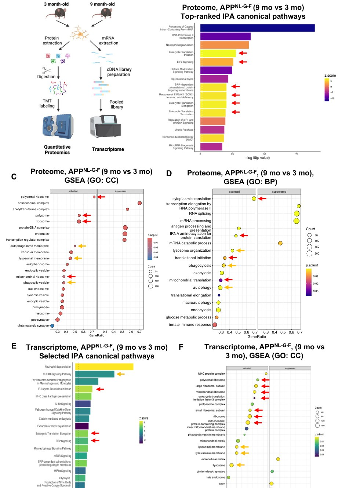</a><figcaption>Рисунок 1: Микроглия демонстрирует протеомную анаболическую адаптацию к Aβ-патологии. (A) Схема эксперимента. Первичная микроглия была выделена из 3- и 9-месячных мышей AppNL-G-F и AppNL-G-F;Trem2KO для комплексного протеомного и транскриптомного профилирования. (B) Анализ канонических путей Ingenuity (IPA) для дифференциально представленных белков (DAP) у 9-месячных мышей AppNL-G-F по сравнению с 3-месячными мышами AppNL-G-F, подчеркивающий обогащение путей синтеза белка (красные стрелки). (C–D) Точечные графики анализа обогащения наборами генов (GSEA) для терминов клеточного компонента (C) и биологического процесса (D). Красные стрелки указывают на одновременное обогащение сигнатурой «Рибосома» (анаболическая), а оранжевые стрелки указывают на сигнатуры «Лизосомальная мембрана» (катаболическая), обогащенные у 9-месячных по сравнению с 3-месячными мышами AppNL-G-F. (E) IPA и (F) GSEA дифференциально экспрессируемых генов (DEG) у 9-месячных мышей AppNL-G-F, подчеркивающие гены, вовлеченные в трансляцию белка (красные стрелки) и катаболические процессы (оранжевые стрелки).</figcaption></figure>
<p class="lead">Главные уборщики мозга, микроглия, пытаются очистить нервную ткань от токсичных белков при болезни Альцгеймера. Для этого им необходима колоссальная энергия и синтез новых белков. Однако по мере накопления бляшек этот спасительный механизм угасает, оставляя клетки беззащитными.</p>
<h2 id="main"><svg class="i" viewBox="0 0 24 24" fill="none" stroke-width="1.5" aria-hidden="true"><path d="M13 6L19 12L13 18" stroke="currentColor" stroke-linecap="round" stroke-linejoin="round"/><path d="M5 6L11 12L5 18" stroke="currentColor" stroke-linecap="round" stroke-linejoin="round"/></svg><span>Главное</span></h2>
<ul><li>Микроглия запускает зависимый от TREM2 анаболический ответ.</li><li>Защитная способность клеток падает по мере роста бляшек.</li><li>У людей этот спад подтвержден на выборке из 523 доноров.</li></ul>
<h2 id="more"><svg class="i" viewBox="0 0 24 24" fill="none" stroke-width="1.5" aria-hidden="true"><path d="M13 6L19 12L13 18" stroke="currentColor" stroke-linecap="round" stroke-linejoin="round"/><path d="M5 6L11 12L5 18" stroke="currentColor" stroke-linecap="round" stroke-linejoin="round"/></svg><span>Подробнее</span></h2>
<p>При болезни Альцгеймера микроглия окружает амилоидные бляшки, пытаясь их поглотить. Ученые выяснили, что этот процесс запускает мощную анаболическую программу, которая зависит от рецептора TREM2 и объединяет синтез белков с ростом митохондрий. Клетки буквально наращивают мощности, чтобы справиться с постоянной нагрузкой.</p>
<p>Однако анализ тканей мышей и данных 523 людей показал парадоксальный факт. По мере роста амилоидной нагрузки этот ресурс истощается. На поздних стадиях болезни способность клеток к биосинтезу падает, хотя внешние маркеры активации продолжают расти. Это грозит исчерпанием резервов при попытках лечения антителами.</p>
<blockquote data-palette="error"><p class="bq-title"><svg class="i" viewBox="0 0 24 24" fill="none" stroke-width="1.5" aria-hidden="true"><path d="M20.0429 21H3.95705C2.41902 21 1.45658 19.3364 2.22324 18.0031L10.2662 4.01533C11.0352 2.67792 12.9648 2.67791 13.7338 4.01532L21.7768 18.0031C22.5434 19.3364 21.581 21 20.0429 21Z" stroke="currentColor" stroke-linecap="round"/><path d="M12 9V13" stroke="currentColor" stroke-linecap="round"/><path d="M12 17.01L12.01 16.9989" stroke="currentColor" stroke-linecap="round" stroke-linejoin="round"/></svg>Ограничения</p><p>Работа основана на моделях грызунов и ретроспективном анализе тканей человека, поэтому требует осторожности при экстраполяции на живых пациентов.</p></blockquote>
<details class="cut" id="full"><summary class="btn btn-md btn-hex" data-bleep="open"><span class="btn-frame" aria-hidden="true"></span><span class="btn-content"><svg class="i i-chev" viewBox="0 0 24 24" fill="none" stroke-width="1.5" aria-hidden="true"><path d="M9 6L15 12L9 18" stroke="currentColor" stroke-linecap="round" stroke-linejoin="round"/></svg><span>Подробный разбор статьи</span></span></summary><div class="cut-body"><h3>Резюме</h3>
<p>Микроглия играет ключевую роль в развитии болезни Альцгеймера (БА), а рецептор TREM2, выступающий одним из мощнейших генетических факторов риска, обеспечивает формирование популяции микроглии, ассоциированной с заболеванием (DAM), что необходимо для взаимодействия с амилоидными бляшками. До сих пор оставалось неясным, каким именно образом TREM2 поддерживает эту защитную функцию и почему она ослабевает по мере прогрессирования патологии. Применяя методы протеомики, транскриптомики единичных клеток и метаболического мечения in vivo, исследователи продемонстрировали, что микроглия вблизи бляшек запускает анаболическую программу, зависящую от TREM2 и связывающую синтез новых белков с биогенезом митохондрий.</p>
<p>Именно эта метаболическая программа, а не сам по себе классический фенотип DAM, характеризует фагоцитарно компетентные клетки микроглии, тогда как её угасание сопряжено с нарушением протеостаза и дисфункцией митохондрий. Неожиданно выяснилось, что данная анаболическая программа носит самоограничивающийся характер: пик её активности наблюдается при низкой амилоидной нагрузке, после чего она снижается по мере роста числа бляшек.</p>
<blockquote data-palette="primary"><p class="bq-title"><svg class="i" viewBox="0 0 24 24" fill="none" stroke-width="1.5" aria-hidden="true"><path d="M12 11.5V16.5" stroke="currentColor" stroke-linecap="round" stroke-linejoin="round"/><path d="M12 7.51L12.01 7.49889" stroke="currentColor" stroke-linecap="round" stroke-linejoin="round"/><path d="M12 22C17.5228 22 22 17.5228 22 12C22 6.47715 17.5228 2 12 2C6.47715 2 2 6.47715 2 12C2 17.5228 6.47715 22 12 22Z" stroke="currentColor" stroke-linecap="round" stroke-linejoin="round"/></svg>Важно</p><p>Анаболическая способность митохондрий и синтеза белка определяет устойчивость микроглии при болезни Альцгеймера, однако этот ресурс истощается по мере прогрессирования патологии.</p></blockquote>
<p>Данная тенденция к снижению анаболического потенциала сохраняется и у людей: анализ когорты из 523 доноров показал, что этот показатель коррелирует с уровнями TREM2, но падает на поздних стадиях Браака, несмотря на продолжающийся рост выраженности DAM-сигнатуры.</p>
<blockquote data-palette="secondary"><p class="bq-title"><svg class="i" viewBox="0 0 24 24" fill="none" stroke-width="1.5" aria-hidden="true"><path d="M12 11.5V16.5" stroke="currentColor" stroke-linecap="round" stroke-linejoin="round"/><path d="M12 7.51L12.01 7.49889" stroke="currentColor" stroke-linecap="round" stroke-linejoin="round"/><path d="M12 22C17.5228 22 22 17.5228 22 12C22 6.47715 17.5228 2 12 2C6.47715 2 2 6.47715 2 12C2 17.5228 6.47715 22 12 22Z" stroke="currentColor" stroke-linecap="round" stroke-linejoin="round"/></svg>Пояснение</p><p>Стадии Браака — это гистологическая классификация степени распространения нейрофибриллярных клубочков и патологических изменений при болезни Альцгеймера, отражающая тяжесть нейродегенеративного процесса.</p></blockquote>
<p>Таким образом, именно анаболическая емкость, а не просто активированное состояние микроглии, служит маркером клеточной устойчивости при БА. Из этого следует, что непрерывная стимуляция фагоцитоза с помощью антиамилоидных антител может нести риск биосинтетического истощения клеток и самоограничения терапевтической эффективности.</p>
<h3>Введение</h3>
<h4>Роль микроглии и метаболические вызовы при болезни Альцгеймера</h4>
<p>При болезни Альцгеймера (БА) микроглия выступает в качестве ключевой линии защиты, отвечая за изоляцию и клиренс нейротоксичных агрегатов амилоида-бета (Aβ). Генетические исследования ставят функцию микроглии в центр факторов риска БА, предполагая, что мощный врожденный иммунный ответ помогает отсрочить развитие патологии. Однако эта защитная способность не является постоянной. По мере прогрессирования патологии микроглия претерпевает глубокие фенотипические изменения: сначала она формирует защитный ответ, но затем часто переходит в дисрегулированное, стареющее или истощенное состояние, при котором она уже не способна сдерживать нейродегенерацию. Понимание механизмов, позволяющих микроглии сохранять функциональную устойчивость в условиях хронического протеотоксического стресса, является первоочередной задачей для разработки терапевтических вмешательств.</p>
<blockquote data-palette="primary"><p class="bq-title"><svg class="i" viewBox="0 0 24 24" fill="none" stroke-width="1.5" aria-hidden="true"><path d="M12 11.5V16.5" stroke="currentColor" stroke-linecap="round" stroke-linejoin="round"/><path d="M12 7.51L12.01 7.49889" stroke="currentColor" stroke-linecap="round" stroke-linejoin="round"/><path d="M12 22C17.5228 22 22 17.5228 22 12C22 6.47715 17.5228 2 12 2C6.47715 2 2 6.47715 2 12C2 17.5228 6.47715 22 12 22Z" stroke="currentColor" stroke-linecap="round" stroke-linejoin="round"/></svg>Важно</p><p>Микроглия защищает мозг от агрегатов Aβ, но при прогрессировании БА истощается, поэтому поиск механизмов ее клеточной устойчивости критически важен для терапии.</p></blockquote>
<p>Недавние успехи в секвенировании РНК единичных клеток позволили описать траекторию этого ответа, выделив консервативную сигнатуру «связанной с заболеванием микроглии» (DAM) или «микроглиального нейродегенеративного фенотипа» (MGnD). Эта программа, запускаемая во многом рецептором TREM2 (triggering receptor expressed on myeloid cells 2), включает в себя снижение экспрессии гомеостатических маркеров (например, P2ry12, Cx3cr1) и активацию путей распознавания липидов и фагоцитоза (например, Apoe, Lpl, Clec7a). Утрачивающие функцию варианты (например, R47H) подчеркивают важность TREM2, поскольку они заметно увеличивают риск развития БА и ассоциируются с нарушением кластеризации микроглии вокруг бляшек, а также с диффузной нейротоксичной амилоидной патологией.</p>
<blockquote data-palette="secondary"><p class="bq-title"><svg class="i" viewBox="0 0 24 24" fill="none" stroke-width="1.5" aria-hidden="true"><path d="M12 11.5V16.5" stroke="currentColor" stroke-linecap="round" stroke-linejoin="round"/><path d="M12 7.51L12.01 7.49889" stroke="currentColor" stroke-linecap="round" stroke-linejoin="round"/><path d="M12 22C17.5228 22 22 17.5228 22 12C22 6.47715 17.5228 2 12 2C6.47715 2 2 6.47715 2 12C2 17.5228 6.47715 22 12 22Z" stroke="currentColor" stroke-linecap="round" stroke-linejoin="round"/></svg>Пояснение</p><p>DAM/MGnD — это специфические профили активности генов микроглии вблизи бляшек, где рецептор TREM2 играет главную дирижерскую роль в переключении клеток на фагоцитоз.</p></blockquote>
<p>Хотя концепция DAM/MGnD оказалась чрезвычайно влиятельной, исследования на людях описывают более широкий спектр состояний микроглии, указывая на то, что один лишь транскрипционный профиль не всегда полностью отражает функциональные возможности клеток. Приобретение транскрипционной сигнатуры — это лишь проект; выполнение функций ассоциированной с бляшками микроглии (пролиферация, миграция и непрерывный фагоцитоз) предъявляет колоссальные биосинтетические и биоэнергетические требования. Это сопряжено с постоянным синтезом новых мембран, гидролитических ферментов и органелл взамен тех, что расходуются при деградации Aβ. То, как именно микроглия получает метаболические ресурсы для поддержания такого состояния в мозге при БА, остается изученным плохо. В то время как иммунный метаболизм периферических макрофагов охарактеризован подробно — где активация сопряжена с четкими метаболичесскими переключениями (например, гликолиз против окислительного фосфорилирования), метаболические потребности микроглии, ассоциированной с бляшками, исследованы гораздо слабее. Несмотря на то, что TREM2 связывают с метаболической приспособленностью микроглии, до сих пор оставалось неизвестным, поддерживает ли он пространственно организованную анаболическую программу <em>in vivo</em> и отделима ли такая программа от транскрипционного состояния DAM.</p>
<h4>Интегрированный подход к изучению метаболической резистентности микроглии</h4>
<p>В настоящей работе мы объединяем интегрированную протеомику, транскриптомику, секвенирование РНК единичных клеток и метаболическое мечение <em>in vivo</em> для характеристики биосинтетических и биоэнергетических особенностей устойчивости микроглии к Aβ-патологии. Мы обнаруживаем, что Aβ-патология сопровождается анаболической программой, зависимой от TREM2, которая представляет собой координированное усиление синтеза белка и биогенеза митохондрий. Нам удалось зафиксировать это в ткани (<em>in situ</em>) на границе фагоцитоза, причем именно данная программа, а не транскрипционная сигнатура DAM, отличает фагоцитарно компетентную микроглию.</p>
<blockquote data-palette="warning"><p class="bq-title"><svg class="i" viewBox="0 0 24 24" fill="none" stroke-width="1.5" aria-hidden="true"><path d="M12 11.5V16.5" stroke="currentColor" stroke-linecap="round" stroke-linejoin="round"/><path d="M12 7.51L12.01 7.49889" stroke="currentColor" stroke-linecap="round" stroke-linejoin="round"/><path d="M12 22C17.5228 22 22 17.5228 22 12C22 6.47715 17.5228 2 12 2C6.47715 2 2 6.47715 2 12C2 17.5228 6.47715 22 12 22Z" stroke="currentColor" stroke-linecap="round" stroke-linejoin="round"/></svg>Осторожно</p><p>Наблюдаемые эффекты проверяются на моделях мышей и тканях человека, однако любая трансляция лабораторных выводов в клинику требует осторожности из-за различий иммунной системы.</p></blockquote>
<p>Неожиданно оказалось, что эта программа является самоограничивающейся: она достигает пика в микроглии с низкой амилоидной нагрузкой и постепенно подавляется по мере роста нагрузки как в мышиных, так и в человеческих тканях. В отсутствие TREM2 микроглия не способна поддерживать этот ответ и вместо этого демонстрирует протеостатическую перегрузку и митохондриальную дисфункцию. Мы интегрируем эти наблюдения в модель спроса и предложения для клиренса, осуществляемого микроглией, и рассматриваем последствия для антиамилоидной иммунотерапии, эффективность которой напрямую зависит от тех же фагоцитарных возможностей.</p>
<h3>Результаты</h3>
<h4>Микроглия запускает анаболическую программу, зависящую от TREM2, в ответ на амилоидную патологию</h4>
<p>Для понимания механизмов адаптации микроглии к амилоидной патологии ученые провели комплексный протеомный и транскриптомный анализ первичных клеток микроглии, выделенных из мышей линий App^NL-G-F и App^NL-G-F;Trem2^KO в возрасте 3 и 9 месяцев, что соответствует ранней и промежуточной стадиям отложения амилоида (<a class="figref" href="#fig-1" data-fig="1">Рис. 1</a>A).</p>
<figure class="fig" data-n="1"><a class="fig-img" href="../../media/2026-09-23/a-self-limiting-trem2-dependent-anabolic-program-confers-mic-f1.jpg" data-zoom title="Открыть рисунок"></a><figcaption>Рисунок 1: Микроглия демонстрирует протеомную анаболическую адаптацию к Aβ-патологии. (A) Схема эксперимента. Первичная микроглия была выделена из 3- и 9-месячных мышей AppNL-G-F и AppNL-G-F;Trem2KO для комплексного протеомного и транскриптомного профилирования. (B) Анализ канонических путей Ingenuity (IPA) для дифференциально представленных белков (DAP) у 9-месячных мышей AppNL-G-F по сравнению с 3-месячными мышами AppNL-G-F, подчеркивающий обогащение путей синтеза белка (красные стрелки). (C–D) Точечные графики анализа обогащения наборами генов (GSEA) для терминов клеточного компонента (C) и биологического процесса (D). Красные стрелки указывают на одновременное обогащение сигнатурой «Рибосома» (анаболическая), а оранжевые стрелки указывают на сигнатуры «Лизосомальная мембрана» (катаболическая), обогащенные у 9-месячных по сравнению с 3-месячными мышами AppNL-G-F. (E) IPA и (F) GSEA дифференциально экспрессируемых генов (DEG) у 9-месячных мышей AppNL-G-F, подчеркивающие гены, вовлеченные в трансляцию белка (красные стрелки) и катаболические процессы (оранжевые стрелки).</figcaption></figure>
<blockquote data-palette="secondary"><p class="bq-title"><svg class="i" viewBox="0 0 24 24" fill="none" stroke-width="1.5" aria-hidden="true"><path d="M12 11.5V16.5" stroke="currentColor" stroke-linecap="round" stroke-linejoin="round"/><path d="M12 7.51L12.01 7.49889" stroke="currentColor" stroke-linecap="round" stroke-linejoin="round"/><path d="M12 22C17.5228 22 22 17.5228 22 12C22 6.47715 17.5228 2 12 2C6.47715 2 2 6.47715 2 12C2 17.5228 6.47715 22 12 22Z" stroke="currentColor" stroke-linecap="round" stroke-linejoin="round"/></svg>Пояснение</p><p>&gt; Протеомный и транскриптомный анализ позволяют одновременно оценить все белки и активные гены в клетке, а линии мышей с нокаутом гена Trem2 помогают понять роль этого рецептора в ответе на болезнь.</p></blockquote>
<p>В микроглии App^NL-G-F протеомный анализ выявил более 7000 белков, из которых 2621 белок существенно изменил свое количество в период с 3 до 9 месяцев, что говорит о масштабной перестройке протеома по мере развития патологии. Анализ путей Ingenuity (IPA) показал мощную активацию путей синтеза белка, включая инициацию, элонгацию и терминацию трансляции, а также сигнальный путь EIF2 (<a class="figref" href="#fig-1" data-fig="1">Рис. 1</a>B). Анализ обогащения наборов генов (GSEA) для клеточных компонентов и биологических процессов подтвердил рост компонентов аппарата трансляции, включая цитозольные и митохондриальные рибосомные субъединицы (<a class="figref" href="#fig-1" data-fig="1">Рис. 1</a>C–D; <a class="figref" href="#fig-S1" data-fig="S1">Рис. S1</a>A). Одновременно с этим обогащались белки, связанные с процессами деградации, такие как мембраны аутофагосом и лизосом, а также фагоцитарные везикулы (<a class="figref" href="#fig-1" data-fig="1">Рис. 1</a>C–D). Транскриптомный профиль также подтвердил этот адаптивный ответ, хотя и менее выраженно, показав рост экспрессии генов трансляции (<a class="figref" href="#fig-1" data-fig="1">Рис. 1</a>E), биогенеза рибосом и комплексов дыхательной цепи митохондрий (<a class="figref" href="#fig-1" data-fig="1">Рис. 1</a>F; <a class="figref" href="#fig-S1" data-fig="S1">Рис. S1</a>B), а также лизосомальных путей (<a class="figref" href="#fig-1" data-fig="1">Рис. 1</a>E–F). Таким образом, микроглия претерпевает координированную метаболическую перестройку при амилоидной патологии, объединяя усиленный синтез белков с повышенной способностью к их деградации для поддержания обновления протеома.</p>
<figure class="fig" data-n="S1" id="fig-S1"><a class="fig-img" href="../../media/2026-09-23/a-self-limiting-trem2-dependent-anabolic-program-confers-mic-fS1.jpg" data-zoom title="Открыть рисунок">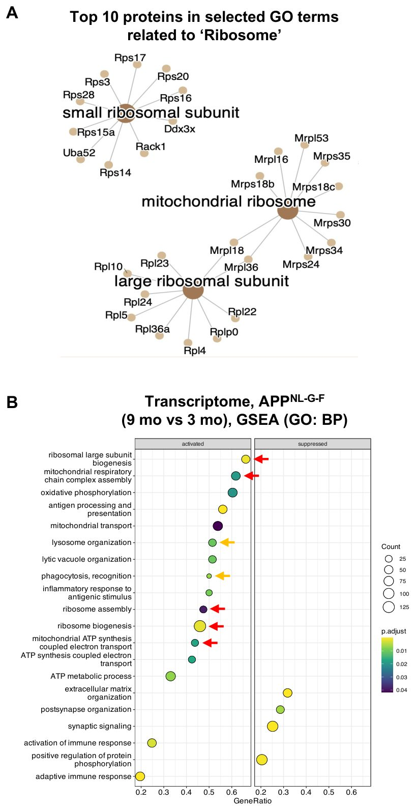</a><figcaption>Расширенный рисунок 1. (A) Графики генно-концептуальных сетей отображают топ-10 белков с дифференциальной экспрессией, связанных с терминами генной онтологии (GO) «малая рибосомальная субъединица», «большая рибосомальная субъединица» и «митохондриальная рибосома». Эти белки значительно обогащены у микроглии AppNL-G-F в возрасте 9 месяцев по сравнению с 3-месячными контрольными мышами. Визуализация была создана с использованием алгоритма компоновки Камады — Каваи. (B) Точечные графики анализа обогащения наборами генов (GSEA) терминов биологических процессов (BP), представляющих транскриптом микроглии AppNL-G-F. Красные стрелки указывают на обогащение анаболических сигнатур, а оранжевые стрелки — на катаболические сигнатуры, обогащенные у 9-месячной микроглии AppNL-G-F по сравнению с 3-месячными аналогами.</figcaption></figure>
<blockquote data-palette="primary"><p class="bq-title"><svg class="i" viewBox="0 0 24 24" fill="none" stroke-width="1.5" aria-hidden="true"><path d="M12 11.5V16.5" stroke="currentColor" stroke-linecap="round" stroke-linejoin="round"/><path d="M12 7.51L12.01 7.49889" stroke="currentColor" stroke-linecap="round" stroke-linejoin="round"/><path d="M12 22C17.5228 22 22 17.5228 22 12C22 6.47715 17.5228 2 12 2C6.47715 2 2 6.47715 2 12C2 17.5228 6.47715 22 12 22Z" stroke="currentColor" stroke-linecap="round" stroke-linejoin="round"/></svg>Важно</p><p>&gt; На фоне развития амилоидной патологии микроглия усиливает синтез белков и их расщепление, однако дефицит TREM2 полностью разрушает эту анаболическую программу к 9 месяцам.</p></blockquote>
<p>Чтобы выяснить, зависит ли эта метаболическая перестройка от TREM2, авторы сравнили профили мышей App^NL-G-F и App^NL-G-F;Trem2^KO. Эффект отсутствия TREM2 напрямую зависел от стадий заболевания. В возрасте 3 месяцев, когда амилоидная нагрузка минимальна, дефицит TREM2 не приводил к значимым изменениям в протеоме микроглии (<a class="figref" href="#fig-S2" data-fig="S2">Рис. S2</a>A). Однако к 9 месяцам потеря TREM2 кардинально нарушала протеом, приводя к изменениям 1480 белков (<a class="figref" href="#fig-2" data-fig="2">Рис. 2</a>A). Как на уровне протеома, так и транскриптома, отсутствие TREM2 резко снижало сигнатуру микроглии, ассоциированной с заболеванием (DAM), включая такие маркеры, как Gpnmb, Cst7 и Lpl (<a class="figref" href="#fig-2" data-fig="2">Рис. 2</a>A–B), что подтверждает ключевую роль TREM2 в переходе гомеостатической микроглии в состояние DAM при стрессе от Aβ. Помимо подавления DAM-сигнатиры, главным следствием дефицита TREM2 стал коллапс анаболического ответа. Протеомный анализ IPA выявил выраженное снижение путей трансляции, включая нацеливание белков, зависимое от SRP, элонгацию и терминацию (<a class="figref" href="#fig-2" data-fig="2">Рис. 2</a>C). GSEA подтвердил сокращение рибосомных компонентов и биогенеза рибосом (<a class="figref" href="#fig-2" data-fig="2">Рис. 2</a>D; <a class="figref" href="#fig-S2" data-fig="S2">Рис. S2</a>B), доказывая, что TREM2 необходим для запуска анаболических путей при патологии Aβ. Транскриптомный анализ подкрепил эти данные, показав падение экспрессии генов трансляции, сборки рибосом и митохондриальных комплексов (<a class="figref" href="#fig-2" data-fig="2">Рис. 2</a>E–F; <a class="figref" href="#fig-S2" data-fig="S2">Рис. S2</a>C). Интеграция данных показала, что если микроглия App^NL-G-F координирует трансляцию, транспорт и деградацию белка, то клетки с дефицитом Trem2 не способны осуществить такую перестройку (<a class="figref" href="#fig-S2" data-fig="S2">Рис. S2</a>D–E).</p>
<figure class="fig" data-n="S2" id="fig-S2"><a class="fig-img" href="../../media/2026-09-23/a-self-limiting-trem2-dependent-anabolic-program-confers-mic-fS2.jpg" data-zoom title="Открыть рисунок">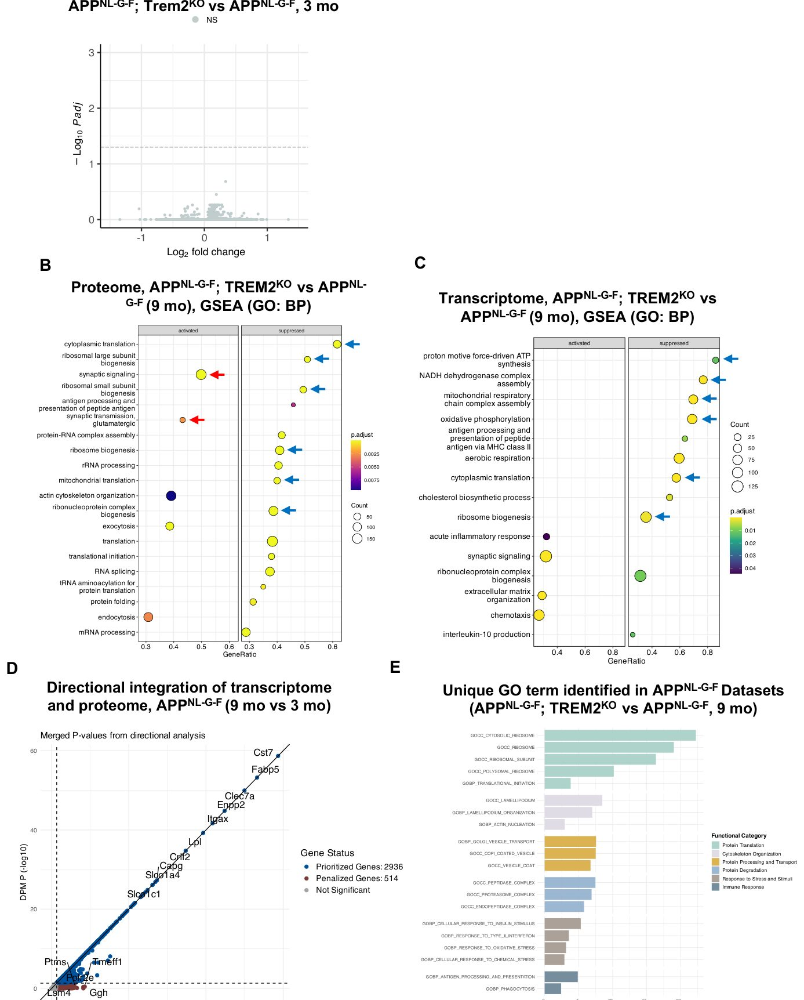</a><figcaption>Расширенный рисунок 2. (A) Вулкан-график, показывающий отсутствие белков с дифференциальным содержанием между микроглией AppNL-G-F;Trem2KO и AppNL-G-F в возрасте 3 месяцев (скорректированный P &lt; 0,05). (B, C) GSEA терминов BP, представляющих протеом и транскриптом микроглии AppNL-G-F;Trem2KO. Точечные графики иллюстрируют обогащенные пути в протеоме (B) и транскрипте (C) микроглии AppNL-G-F;Trem2KO по сравнению с аналогами AppNL-G-F в возрасте 9 месяцев. Синие стрелки указывают на подавленные «рибосомальные» сигнатуры. (D) Корреляционный анализ направленной интеграции транскриптома и протеома с использованием ActivePathways. Диаграмма рассеяния, иллюстрирующая объединенные значения P, рассчитанные с помощью направленного анализа (DPM, ось y) и ненаправленного анализа (метод Брауна, ось x) в микроглии AppNL-G-F (9 месяцев против 3 месяцев). Приоритетные гены с направленно согласованными изменениями в наборах данных располагаются на диагонали или вблизи нее (синий цвет), тогда как гены с противоречивыми направленными изменениями наказываются и располагаются ниже диагонали (коричневый цвет). (E) Многоомиксное обогащение путей микроглии AppNL-G-F. Столбчатая диаграмма, иллюстрирующая уникальные термины GO, обнаруженные в микроглии AppNL-G-F, но отсутствующие в наборах данных микроглии AppNL-G-F;Trem2KO. Слияние мультиомиксных данных выполнялось с использованием ActivePathways со слитными оценками значимости, полученными с помощью метода объединения направленных значений p (DPM). Эти приоритетные термины связаны с протеостазом и сгруппированы в шесть функциональных категорий (указаны цветом). Значимость определялась с использованием объединенных значений P в качестве входных данных для анализа обогащения.</figcaption></figure>
<figure class="fig" data-n="2" id="fig-2"><a class="fig-img" href="../../media/2026-09-23/a-self-limiting-trem2-dependent-anabolic-program-confers-mic-f2.jpg" data-zoom title="Открыть рисунок">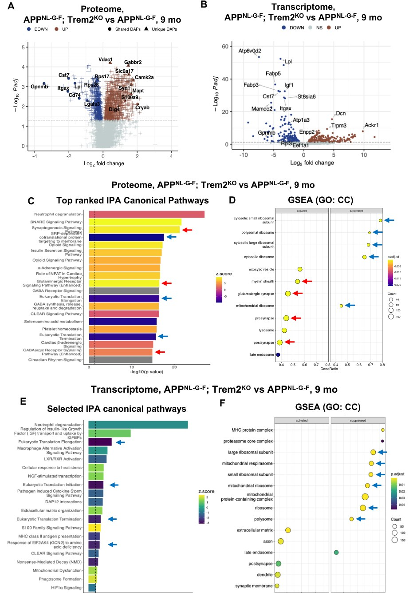</a><figcaption>Рисунок 2: Дефицит TREM2 вызывает крах анаболического ответа. (A) Вулканический график, сравнивающий протеом микроглии 9-месячных мышей AppNL-G-F и AppNL-G-F;Trem2KO. Треугольные точки указывают на уникально измененные белки в микроглии AppNL-G-F;Trem2KO. Диаграмма Венна показывает уникальные и общие гены и белки между транскриптомом и протеомом. (B) Вулканический график, сравнивающий транскриптом микроглии 9-месячных мышей AppNL-G-F и AppNL-G-F;Trem2KO. (C) IPA путей с наивысшим рангом в микроглии AppNL-G-F;Trem2KO, показывающий специфическое подавление путей трансляции белка (синие стрелки) и повышенные уровни синаптических белков (красные стрелки). (D) Точечные графики GSEA, подтверждающие широкое сокращение цитозольных и митохондриальных рибосомных компонентов в микроглии Trem2KO (синие стрелки); красные стрелки указывают на одновременное накопление синаптических и миелиновых сигнатур. (E) IPA и (F) GSEA дифференциально экспрессируемых генов (DEG) у 9-месячных мышей AppNL-G-F и AppNL-G-F;Trem2KO, подчеркивающие подавленные гены, вовлеченные в трансляцию белка и рибосому (синие стрелки).</figcaption></figure>
<blockquote data-palette="warning"><p class="bq-title"><svg class="i" viewBox="0 0 24 24" fill="none" stroke-width="1.5" aria-hidden="true"><path d="M12 11.5V16.5" stroke="currentColor" stroke-linecap="round" stroke-linejoin="round"/><path d="M12 7.51L12.01 7.49889" stroke="currentColor" stroke-linecap="round" stroke-linejoin="round"/><path d="M12 22C17.5228 22 22 17.5228 22 12C22 6.47715 17.5228 2 12 2C6.47715 2 2 6.47715 2 12C2 17.5228 6.47715 22 12 22Z" stroke="currentColor" stroke-linecap="round" stroke-linejoin="round"/></svg>Осторожно</p><p>&gt; Выводы исследования получены на генетических моделях мышей с искусственными мутациями, что требует осторожности при прямом переносе результатов на спорадическую болезнь Альцгеймера у людей.</p></blockquote>
<p>Вследствие дефектов обновления протеома в клетках Trem2^KO происходило накопление синаптических и миелиновых белков — материалов, которые в норме должны удаляться после фагоцитоза (<a class="figref" href="#fig-2" data-fig="2">Рис. 2</a>C–D). Этот протеостатический сбой проявился в том, что многие уникально upregulated белки оказались синаптическими компонентами (<a class="figref" href="#fig-2" data-fig="2">Рис. 2</a>A). Все эти данные показывают, что микроглия адаптируется к патологии Aβ посредством зависимой от TREM2 анаболической программы, обеспечивающей перестройку протеома и поддержание протеостаза.</p>
<h4>TREM2 стимулирует синтез новых белков в микроглии, ассоциированной с бляшками</h4>
<p>Чтобы подтвердить анаболическую программу, обнаруженную с помощью омиксных методов in vivo, исследователи использовали метод Fluorescent Non-Canonical Amino Acid Tagging (FUNCAT) для маркировки вновь синтезированных белков (<a class="figref" href="#fig-3" data-fig="3">Рис. 3</a>A). Спустя 16 часов после внутрибрюшинного введения азидогомоаланина (AHA), аналога метионина, который встраивается в созревающие белки, методом проточной цитометрии анализировали популяцию микроглии CX3CR1+ CD45+ (Рис. SN). В возрасте 3 месяцев интенсивность FUNCAT была схожей у мышей линий AppNL-G-F и AppNL-G-F;Trem2KO. Однако к 9 месяцам микроглия мышей AppNL-G-F демонстрировала примерно двукратное увеличение скорости синтеза белков, в то время как дефицит белка TREM2 полностью блокировал эту активацию (<a class="figref" href="#fig-3" data-fig="3">Рис. 3</a>B-C). На гистограммах у клеток из AppNL-G-F четко выделялось плечо с высоким уровнем FUNCAT (<a class="figref" href="#fig-3" data-fig="3">Рис. 3</a>B, красная стрелка), что указывает на появление метаболически активной субпопуляции. Поскольку известно, что CD45high микроглия накапливается вокруг амилоидных бляшек, авторы соотнесли это с уровнем синтеза белка. Субпопуляция CD45high расширялась по мере развития патологии Aβ (Рис. SN), но этот процесс почти не наблюдался у нокаутных по Trem2 мышей. Уровень FUNCAT у CD45high клеток оказался значительно выше, чем у CD45low (<a class="figref" href="#fig-3" data-fig="3">Рис. 3</a>D). Это говорит о том, что именно микроглия вблизи бляшек активнее всего синтезирует белки. Метод FUNCAT in situ подтвердил мощную индукцию синтеза белка конкретно у бляшечно-ассоциированной микроглии AppNL-G-F мышей, и этот эффект также исчезал при отсутствии TREM2 (<a class="figref" href="#fig-3" data-fig="3">Рис. 3</a>E-F).</p>
<figure class="fig" data-n="3" id="fig-3"><a class="fig-img" href="../../media/2026-09-23/a-self-limiting-trem2-dependent-anabolic-program-confers-mic-f3.jpg" data-zoom title="Открыть рисунок">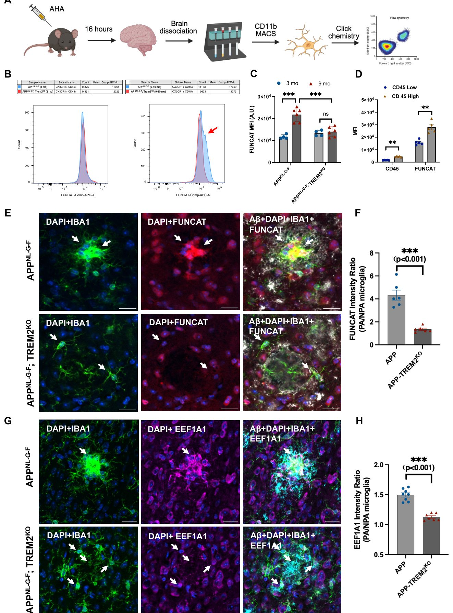</a><figcaption>Рисунок 3: TREM2 стимулирует синтез новых белков в микроглии, ассоциированной с бляшками. (A) Схема мечения FUNCAT in vivo. Мышам вводили азидогомоаланин (AHA, 50 мг/кг) за 16 часов до выделения микроглии и анализа. (B) Представительные гистограммы проточной цитометрии интенсивности FUNCAT в микроглии CX3CR1+ CD45+. Красная стрелка указывает на плечо «высокого уровня FUNCAT», присутствующее у микроглии AppNL-G-F, но отсутствующее у мышей Trem2KO. (C) Количественная оценка средней интенсивности флуоресценции (MFI) для сигнала FUNCAT. (D) Сравнение интенсивности CD45 и FUNCAT между популяциями микроглии CD45high и CD45low. (E) Представительные конфокальные изображения кортикальных бляшек, окрашенных на Iba1 (зеленый), Aβ (82E1, серый) и новые белки (FUNCAT, красный). Масштабная линейка: 50 мкм. (F) Количественная оценка интенсивности FUNCAT в микроглии, ассоциированной с бляшками. (G) Представительные конфокальные изображения фактора элонгации трансляции EEF1A1 (пурпурный) в микроглие, ассоциированной с бляшками, от 9-месячных мышей AppNL-G-F и AppNL-G-F;Trem2KO, совместно окрашенных на Iba1 (зеленый) и Aβ (голубой). Белые стрелки указывают на индукцию EEF1A1 внутри микроглии Iba1+, ассоциированной с бляшками. Масштабная линейка: 20 мкм. (H) Количественная оценка интенсивности EEF1A1 внутри микроглии Iba1+, ассоциированной с бляшками. n = 7-8 мышей на группу. ***P &lt; 0,001 по двустороннему непарному t-тесту.</figcaption></figure>
<blockquote data-palette="secondary"><p class="bq-title"><svg class="i" viewBox="0 0 24 24" fill="none" stroke-width="1.5" aria-hidden="true"><path d="M12 11.5V16.5" stroke="currentColor" stroke-linecap="round" stroke-linejoin="round"/><path d="M12 7.51L12.01 7.49889" stroke="currentColor" stroke-linecap="round" stroke-linejoin="round"/><path d="M12 22C17.5228 22 22 17.5228 22 12C22 6.47715 17.5228 2 12 2C6.47715 2 2 6.47715 2 12C2 17.5228 6.47715 22 12 22Z" stroke="currentColor" stroke-linecap="round" stroke-linejoin="round"/></svg>Пояснение</p><p>&gt; FUNCAT — это метод флуоресцентного мічения нестандартных аминокислот, позволяющий напрямую измерять скорость синтеза новых белков в живых клетках.</p></blockquote>
<p>Для подтверждения результатов через прямые компоненты аппарата трансляции ученые провели окрашивание на эукариотический фактор элонгации трансляции 1α1 (EEF1A1), который входит в число генов анаболической сигнатуры. Экспрессия EEF1A1 заметно возрастала в микроглии около бляшек у мышей AppNL-G-F, но не у мышей AppNL-G-F;Trem2KO (<a class="figref" href="#fig-3" data-fig="3">Рис. 3</a>G, H). Данные полностью совпали с результатами FUNCAT, подтвердив высокий уровень трансляционной активности на месте. Эти данные хорошо согласуются с известной осью TREM2-mTOR: фосфорилированный рибосомный белок S6 (p-RPS6), служащий классическим маркером активности mTORC1, также увеличивался в бляшечно-ассоциированной микроглии зависимым от TREM2 образом (Рис. SN). В совокупности эти наблюдения доказывают, что анаболическая программа под управлением TREM2 сопровождается ростом трансляционного потенциала и активным синтезом белка в микроглии, окружающей бляшки.</p>
<blockquote data-palette="primary"><p class="bq-title"><svg class="i" viewBox="0 0 24 24" fill="none" stroke-width="1.5" aria-hidden="true"><path d="M12 11.5V16.5" stroke="currentColor" stroke-linecap="round" stroke-linejoin="round"/><path d="M12 7.51L12.01 7.49889" stroke="currentColor" stroke-linecap="round" stroke-linejoin="round"/><path d="M12 22C17.5228 22 22 17.5228 22 12C22 6.47715 17.5228 2 12 2C6.47715 2 2 6.47715 2 12C2 17.5228 6.47715 22 12 22Z" stroke="currentColor" stroke-linecap="round" stroke-linejoin="round"/></svg>Важно</p><p>&gt; К 9 месяцам у мышей AppNL-G-F синтез белка в микроглии возрастает примерно в 2 раза, и этот процесс полностью зависит от наличия функционального рецептора TREM2.</p></blockquote>
<h4>Анаболическая адаптация зависит от TREM2 и ограничена по мере накопления Aβ</h4>
<p>Для оценки связи между фагоцитарной нагрузкой и метаболическим ответом мы проанализировали транскриптомы микроглии, взаимодействующей с Aβ, используя флуоресцентный зонд Methoxy-X04 (X04) для мечения фибриллярного амилоида (<a class="figref" href="#fig-4" data-fig="4">Рис. 4</a>A). Первичную микроглию из мышей линий AppNL-G-F и AppNL-G-F;Trem2KO разделили на X04⁺ (фагоцитирующие) и X04⁻ (нефагоцитирующие) популяции. Клетки X04⁺ дополнительно классифицировали по интенсивности сигнала на группы с низкой, средней и высокой нагрузкой (<a class="figref" href="#fig-4" data-fig="4">Рис. 4</a>B). В возрасте 5–6 месяцев доля X04⁺ клеток была одинаковой у обоих генотипов, что доказывает независимость первичного захвата Aβ от TREM2. Однако к 9–10 месяцам дефицит TREM2 приводил к значительному снижению популяции X04⁺, преимущественно за счет исчезновения подгруппы X04high (<a class="figref" href="#fig-4" data-fig="4">Рис. 4</a>B-C). Это указывает на то, что TREM2 критически важен для выживания или поддержания кинетики переработки амилоида при хронической нагрузке.</p>
<figure class="fig" data-n="4" id="fig-4"><a class="fig-img" href="../../media/2026-09-23/a-self-limiting-trem2-dependent-anabolic-program-confers-mic-f4.jpg" data-zoom title="Открыть рисунок">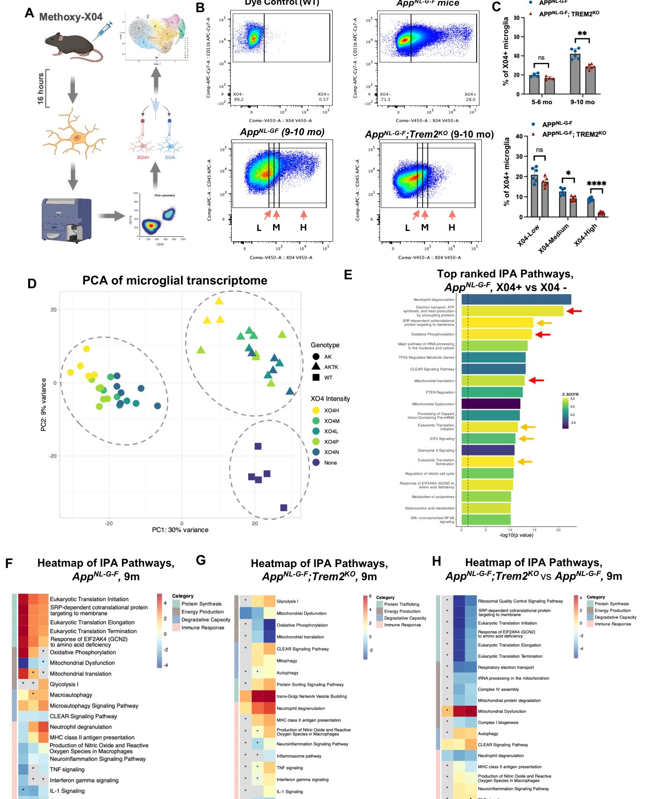</a><figcaption>Рисунок 4: Анаболическая адаптация микроглии зависит от TREM2 и является самоограничивающейся вдоль градиента нагрузки Aβ. (A) Схема стратегии гейтирования, используемой для сортировки Methoxy-X04 (X04) положительной (X04+) и отрицательной (X04-) микроглии для транскрипционного профилирования. (B) Представительные графики проточной цитометрии, иллюстрирующие гейтирование фагоцитирующей Aβ микроглии. Верхние панели: Сравнение мышей дикого типа (WT) и AppNL-G-F подтверждает специфичность сигнала X04. Нижние панели: Стратификация популяции X04+ на бины низкой, средней и высокой интенсивности флуоресценции, представляющие возрастающую фагоцитарную нагрузку, у мышей AppNL-G-F и AppNL-G-F;Trem2KO. (C) Временной анализ фагоцитирующей Aβ микроглии. Верхние панели: Экспансия популяции X04+ у мышей AppNL-G-F в возрасте от 5–6 месяцев до 9–10 месяцев. Нижние панели: Сравнение распределений интенсивности X04 у 9-месячных мышей AppNL-G-F и AppNL-G-F;Trem2KO, показывающее заметное сокращение популяции X04high в микроглии TREM2KO. (D) Анализ главных компонент (PCA) образцов объемного RNA-seq (n = 46). Точки представляют отдельные биологические реплики по генотипам: WT (n = 5), AppNL-G-F (n = 23) и AppNL-G-F;Trem2KO (n = 18). Цвета обозначают классификацию X04 (подмножества X04- против X04+: низкая, средняя, высокая). Обратите внимание, что уровни X04 обуславливают разделение вдоль PC2, определяя четкие состояния фагоцитоза бляшек. (E) IPA путей с наивысшим рангом, обогащенных у X04+ по сравнению с X04- микроглией AppNL-G-F. Стрелки выделяют надежную индукцию митохондриального биогенеза/окислительного фосфорилирования (красный) и нацеливания/синтеза белков (оранжевый) при взаимодействии с Aβ. (F, G) Сравнительный анализ IPA, иллюстрирующий транскрипционные изменения микроглии по фагоцитарному градиенту (X04high, X04med, X04low) относительно X04- контролей у мышей AppNL-G-F (F) и мышей AppNL-G-F;Trem2KO (G) в возрасте 9 месяцев. (H) Сравнение IPA для AppNL-G-F против AppNL-G-F;Trem2KO, стратифицированное по интенсивности Methoxy-X04 в возрасте 9 месяцев. Z-оценки активации для выбранных значительно обогащенных канонических путей (точный тест Фишера; скорректированное P &lt; 0,05) представлены в виде тепловой карты. Цветовая шкала указывает на предсказанную направленность путей: красный соответствует положительным Z-оценкам (предсказанная активация), синий представляет отрицательные Z-оценки (предсказанное ингибирование), а серый обозначает пути, для которых IPA не смогла предсказать направленность. Пути, не достигшие статистической значимости, отмечены звездочкой (*). Строки путей сгруппированы в четыре категории в соответствии с их биологической значимостью.</figcaption></figure>
<blockquote data-palette="primary"><p class="bq-title"><svg class="i" viewBox="0 0 24 24" fill="none" stroke-width="1.5" aria-hidden="true"><path d="M12 11.5V16.5" stroke="currentColor" stroke-linecap="round" stroke-linejoin="round"/><path d="M12 7.51L12.01 7.49889" stroke="currentColor" stroke-linecap="round" stroke-linejoin="round"/><path d="M12 22C17.5228 22 22 17.5228 22 12C22 6.47715 17.5228 2 12 2C6.47715 2 2 6.47715 2 12C2 17.5228 6.47715 22 12 22Z" stroke="currentColor" stroke-linecap="round" stroke-linejoin="round"/></svg>Важно</p><p>Дефицит TREM2 не препятствует захвату амилоида, но критически снижает выживаемость микроглии с высокой амилоидной нагрузкой (X04high) к 9 месяцам жизни.</p></blockquote>
<p>Анализ главных компонент (PCA) подтвердил четкое разделение транскриптомных профилей в зависимости от генотипа и градиента интенсивности X04 (<a class="figref" href="#fig-4" data-fig="4">Рис. 4</a>D; Рис. SN 4A-B). У мышей AppNL-G-F фагоцитоз Aβ индуцирует митохондриальные пути (окислительное фосфорилирование, транспорт электронов) и программы синтеза белка (трансляция, SRP-зависимый таргетинг) (<a class="figref" href="#fig-4" data-fig="4">Рис. 4</a>E). Отсутствие TREM2 полностью блокирует эту программу (Рис. SN 4C). Анализ подгрупп показал нелинейный характер ответа: экспрессия анаболических генов достигает пика в клетках X04low и снижается по мере роста нагрузки. Напротив, гены DAM-сигнатуры (презентация антигенов MHC II) усиливаются с ростом X04, тогда как воспалительные пути (TNF, IFN-γ) подавляются (<a class="figref" href="#fig-4" data-fig="4">Рис. 4</a>F).</p>
<blockquote data-palette="secondary"><p class="bq-title"><svg class="i" viewBox="0 0 24 24" fill="none" stroke-width="1.5" aria-hidden="true"><path d="M12 11.5V16.5" stroke="currentColor" stroke-linecap="round" stroke-linejoin="round"/><path d="M12 7.51L12.01 7.49889" stroke="currentColor" stroke-linecap="round" stroke-linejoin="round"/><path d="M12 22C17.5228 22 22 17.5228 22 12C22 6.47715 17.5228 2 12 2C6.47715 2 2 6.47715 2 12C2 17.5228 6.47715 22 12 22Z" stroke="currentColor" stroke-linecap="round" stroke-linejoin="round"/></svg>Пояснение</p><p>DAM (Disease-Associated Microglia) — специфическое состояние микроглии при нейродегенерации, характеризующееся потерей гомеостатических функций и активацией генов для борьбы с патологией.</p></blockquote>
<p>У мышей Trem2KO анаболический ответ отсутствует даже в группах X04low и X04medium (<a class="figref" href="#fig-4" data-fig="4">Рис. 4</a>G). При увеличении нагрузки такие клетки демонстрируют признаки митохондриальной дисфункции, компенсаторный гликолиз и усиление провоспалительных сигналов (<a class="figref" href="#fig-4" data-fig="4">Рис. 4</a>G-H). Таким образом, анаболическая программа является TREM2-зависимой и самоограничивающейся: она активируется при поглощении Aβ, достигает максимума при низкой нагрузке и затухает при её накоплении, что при дефиците TREM2 ведет к метаболическому коллапсу микроглии.</p>
<blockquote data-palette="warning"><p class="bq-title"><svg class="i" viewBox="0 0 24 24" fill="none" stroke-width="1.5" aria-hidden="true"><path d="M12 11.5V16.5" stroke="currentColor" stroke-linecap="round" stroke-linejoin="round"/><path d="M12 7.51L12.01 7.49889" stroke="currentColor" stroke-linecap="round" stroke-linejoin="round"/><path d="M12 22C17.5228 22 22 17.5228 22 12C22 6.47715 17.5228 2 12 2C6.47715 2 2 6.47715 2 12C2 17.5228 6.47715 22 12 22Z" stroke="currentColor" stroke-linecap="round" stroke-linejoin="round"/></svg>Осторожно</p><p>Исследование проведено на модельных линиях мышей; выявленные метаболические изменения требуют подтверждения в контексте патологии человека.</p></blockquote>
<h4>Анаболическая способность как маркер фагоцитарной компетентности микроглии</h4>
<p>Для оценки роли анаболической адаптации в активации микроглии был проведен scRNA-seq клеток X04⁺ (фагоцитирующих) и X04⁻ (нефагоцитирующих), выделенных из мозга мышей линии AppNL-G-F в возрасте 9–10 месяцев. Анализ выявил типичные состояния: гомеостатическое (HM), активированное (ARM) и переходное (TRM) (Рис. SN 5A-B). Однако классическая сигнатура «микроглии, ассоциированной с болезнью» (DAM) оказалась распределена равномерно между X04⁺ и X04⁻ популяциями (Рис. SN 5C), что указывает на неспособность этого профиля дифференцировать функционально активные фагоциты от клеток, просто реагирующих на патологию.</p>
<blockquote data-palette="secondary"><p class="bq-title"><svg class="i" viewBox="0 0 24 24" fill="none" stroke-width="1.5" aria-hidden="true"><path d="M12 11.5V16.5" stroke="currentColor" stroke-linecap="round" stroke-linejoin="round"/><path d="M12 7.51L12.01 7.49889" stroke="currentColor" stroke-linecap="round" stroke-linejoin="round"/><path d="M12 22C17.5228 22 22 17.5228 22 12C22 6.47715 17.5228 2 12 2C6.47715 2 2 6.47715 2 12C2 17.5228 6.47715 22 12 22Z" stroke="currentColor" stroke-linecap="round" stroke-linejoin="round"/></svg>Пояснение</p><p>DAM (Disease-Associated Microglia) — специфический транскрипционный профиль микроглии, возникающий при нейродегенерации, который часто ошибочно принимают за универсальный маркер функциональной активации.</p></blockquote>
<p>При повышении разрешения кластеризации удалось разделить HM на подкластеры 0 (нефагоцитирующие) и 2 (фагоцитирующие), а TRM — на 6 (нефагоцитирующие) и 1 (фагоцитирующие) (<a class="figref" href="#fig-5" data-fig="5">Рис. 5</a>A, B). Баллы DAM-модуля оказались сопоставимы для фагоцитирующих и нефагоцитирующих пар (Рис. SN 5E), подтверждая слабую связь DAM с фагоцитозом. Анализ дифференциально экспрессируемых генов (DEG) через IPA и GSEA показал, что фагоцитарное состояние характеризуется синхронным усилением биогенеза рибосом, синтеза белка и митохондриального окислительного фосфорилирования (<a class="figref" href="#fig-5" data-fig="5">Рис. 5</a>C; Рис. SN 5F-H).</p>
<figure class="fig" data-n="5" id="fig-5"><a class="fig-img" href="../../media/2026-09-23/a-self-limiting-trem2-dependent-anabolic-program-confers-mic-f5.jpg" data-zoom title="Открыть рисунок">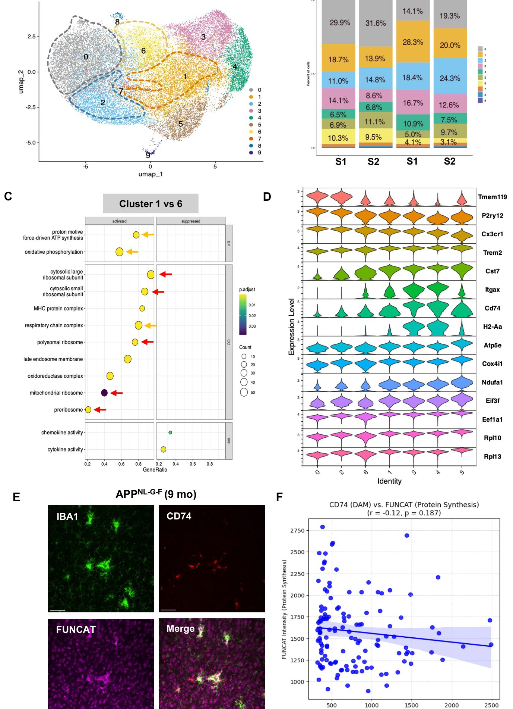</a><figcaption>Рисунок 5: Сигнатура анаболической адаптации определяет фагоцитарную компетентность точнее, чем каноническая сигнатура DAM. (A) Проекция UMAP профилей одноядерной RNA-seq (разрешение 0,3) из отсортированной X04+ (фагоцитирующей) и X04- (не фагоцитирующей) микроглии, выделенной из 9–10-месячных мышей AppNL-G-F. Субкластеризация высокого разрешения разделяет канонически определенные гомеостатические (HM) и переходные (TRM) кластеры на обогащенные фагоцитирующими и не фагоцитирующими субпопуляции (HM на кластеры 0 и 2; TRM на кластеры 1 и 6), которые разделяются по фагоцитарной компетентности. (B) Количественная оценка состава кластеров, показывающая относительное обогащение каждого субкластера во фракциях X04+ по сравнению с X04-. (C) Анализ обогащения наборами генов (GSEA), сравнивающий обогащенную фагоцитирующую субпопуляцию (Кластер 1) с не фагоцитирующей субпопуляцией (Кластер 6), выявляющий надежное обогащение путей рибосомы и окислительного фосфорилирования в фагоцитирующей субпопуляции. (D) Скрипичные графики, показывающие экспрессию гомеостатической сигнатуры (Tmem119, P2ry12, Cx3cr1), сигнатуры DAM (Trem2, Cst7, Itgax, Cd74, H2-Aa) и сигнатуры анаболической адаптации (Atp5e, Cox4i1, Ndufa1, Eif3f, Eef1a1, Rpl10, Rpl13) по выявленным субпопуляциям. В то время как сигнатура DAM сопоставима между фагоцитирующим и не фагоцитирующим состояниями, сигнатура анаболической адаптации избирательно повышена в фагоцитарных кластерах (1 и 2). (E) Представительные конфокальные изображения микроглии, ассоциированной с бляшками, у 9-месячных мышей AppNL-G-F, совместно окрашенных на Iba1, маркер DAM CD74 и FUNCAT (синтез новых белков). Большинство микроглии Iba1high показывает надежный сигнал FUNCAT, тогда как CD74 индуцируется только в подмножестве. Масштабная линейка: 50 мкм. (F) Количественная оценка корреляции между интенсивностью FUNCAT и CD74 внутри отдельной микроглии Iba1+ (R Пирсона = -0,12, P = 0,187), показывающая, что транскрипционное состояние DAM не предсказывает анаболическую активность.</figcaption></figure>
<blockquote data-palette="primary"><p class="bq-title"><svg class="i" viewBox="0 0 24 24" fill="none" stroke-width="1.5" aria-hidden="true"><path d="M12 11.5V16.5" stroke="currentColor" stroke-linecap="round" stroke-linejoin="round"/><path d="M12 7.51L12.01 7.49889" stroke="currentColor" stroke-linecap="round" stroke-linejoin="round"/><path d="M12 22C17.5228 22 22 17.5228 22 12C22 6.47715 17.5228 2 12 2C6.47715 2 2 6.47715 2 12C2 17.5228 6.47715 22 12 22Z" stroke="currentColor" stroke-linecap="round" stroke-linejoin="round"/></svg>Важно</p><p>Фагоцитарная активность микроглии лучше предсказывается анаболическим профилем (синтез белка и АТФ), чем классической сигнатурой DAM.</p></blockquote>
<p>Анаболическая адаптация включает индукцию фактора элонгации трансляции Eef1a1, рибосомных субъединиц (Rpl10, Rpl13) и компонентов цепи переноса электронов (Ndufa1, Cox4i1, Atp5e) (<a class="figref" href="#fig-5" data-fig="5">Рис. 5</a>D). При этом нейровоспалительные сигналы в фагоцитирующих кластерах (1, 2) были снижены по сравнению с нефагоцитирующими (6, 0) (Рис. SN 5F, G). Пространственная валидация на срезах мозга 9-месячных мышей AppNL-G-F с использованием Iba1, CD74 и метода FUNCAT подтвердила, что большинство клеток у бляшек (Iba1high) имеют высокий уровень анаболизма, тогда как CD74 экспрессируется лишь частично и не коррелирует с интенсивностью FUNCAT (R = −0.12, P = 0.187; <a class="figref" href="#fig-5" data-fig="5">Рис. 5</a>E, F).</p>
<blockquote data-palette="warning"><p class="bq-title"><svg class="i" viewBox="0 0 24 24" fill="none" stroke-width="1.5" aria-hidden="true"><path d="M12 11.5V16.5" stroke="currentColor" stroke-linecap="round" stroke-linejoin="round"/><path d="M12 7.51L12.01 7.49889" stroke="currentColor" stroke-linecap="round" stroke-linejoin="round"/><path d="M12 22C17.5228 22 22 17.5228 22 12C22 6.47715 17.5228 2 12 2C6.47715 2 2 6.47715 2 12C2 17.5228 6.47715 22 12 22Z" stroke="currentColor" stroke-linecap="round" stroke-linejoin="round"/></svg>Осторожно</p><p>Исследование проведено на модели болезни Альцгеймера у мышей; корреляция между анаболизмом и фагоцитозом не доказывает прямую причинно-следственную связь.</p></blockquote>
<h4>Утрата анаболической программы связана с протеостатической перегрузкой</h4>
<p>Результаты омиксных исследований указывают на то, что способность микроглии поддерживать фагоцитоз критически зависит от энергетического обеспечения. Мы проверили, приводит ли дефицит TREM2 к нарушению переработки фагоцитированного материала. Конфокальная микроскопия показала, что в микроглии Trem2KO рядом с амилоидными бляшками накапливается значительное количество постсинаптического белка PSD95 (<a class="figref" href="#fig-6" data-fig="6">Рис. 6</a>A, B). Эти скопления окружены лизосомами CD68+, что свидетельствует о блокировке процессов деградации (Рис. SN). Аналогичное накопление наблюдалось для пресинаптического маркера vGluT1 (Рис. SN) и миелинового белка MBP (<a class="figref" href="#fig-6" data-fig="6">Рис. 6</a>C, D). Поскольку PSD95 и MBP не являются компонентами амилоида, их накопление указывает на общий сбой механизмов деградации при отсутствии анаболической поддержки, опосредованной TREM2.</p>
<figure class="fig" data-n="6" id="fig-6"><a class="fig-img" href="../../media/2026-09-23/a-self-limiting-trem2-dependent-anabolic-program-confers-mic-f6.jpg" data-zoom title="Открыть рисунок">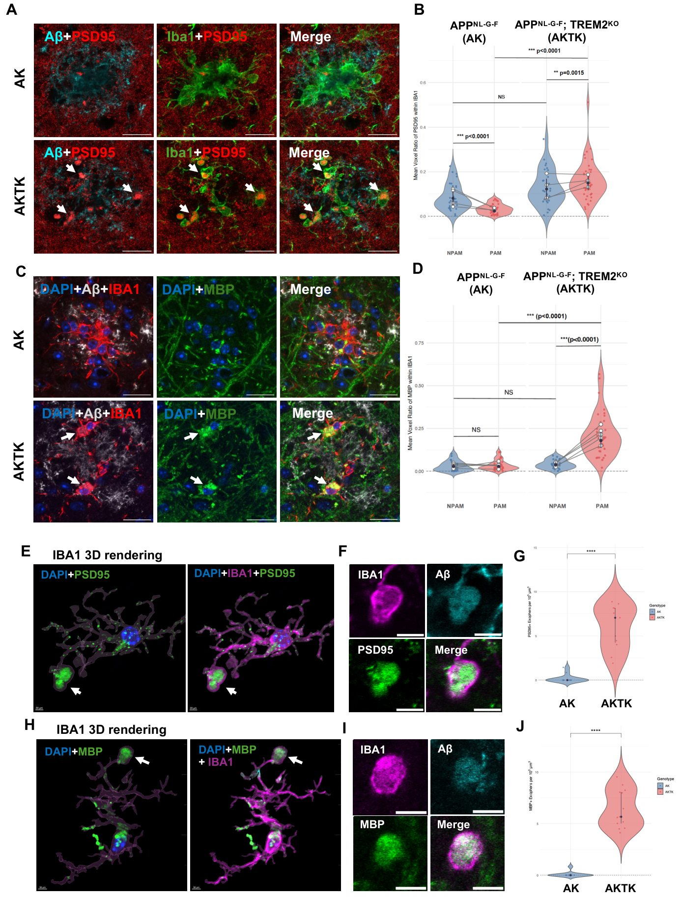</a><figcaption>Рисунок 6: Потеря TREM2 приводит к внутриклеточному накоплению непереваренного материала. (A, C) Представительные конфокальные изображения микроглии, ассоциированной с бляшками, у 9-месячных мышей, совместно окрашенные на PSD95 (постсинаптический маркер, A) или основной белок миелина (MBP, C), а также на Iba1 и Aβ. Белые стрелки выделяют выраженное внутриклеточное накопление точечных скоплений PSD95 и MBP в соме микроглии Trem2KO. Масштабная шкала: 50 мкм. (B, D) Количественная оценка накопления материала в зависимости от близости к бляшке. Графики скрипки отображают процент перекрывания вокселей PSD95 (B) или MBP (D) в пределах ROI Iba1+, классифицированных как не связанные с бляшками (NPAM) или связанные с бляшками (PAM). Цветные точки представляют отдельные ROI; сплошные черные круги и планки погрешностей представляют оценки маргинальных средних (EMM) ± 95% доверительные интервалы, полученные с помощью бета-биномиальной обобщенной линейной смешанной модели (GLMM). Линии соединяют парные регионы в пределах биологических повторностей (n = 5–6 мышей на группу). Парные сравнения выполнялись с использованием метода Дельта. Уровни значимости: *P &lt; 0,05, <strong>P &lt; 0,01, </strong>*P &lt; 0,001, ****P &lt; 0,0001. Точные значения p указаны для недостоверных тенденций. (E) 3D-рендер поверхности (Imaris) микроглиальной клетки, ассоциированной с бляшкой, у мышей AppNL-G-F;Trem2KO, совместно окрашенной на DAPI, PSD95 (зеленый), Iba1 (пурпурный) и Aβ (голубой). Обратите внимание на экструзию крупного отростка, заполненного материалом. (F) Оптический срез высокого разрешения (63X) (0,17 мкм), подтверждающий включение точечных скоплений PSD95 и агрегатов Aβ внутрь отростка Iba1+. (G) Количественная оценка отростков PSD95+ в нише бляшки (ROI 105 мкм³). Каждая точка представляет отдельный ROI бляшки. Медианы и межквартильные размахи (IQR) обозначены точками и полосами соответственно. Статистическая значимость определялась с использованием непараметрического тестов суммы рангов Вилкоксона с точной перестановкой (пакет R coin, v1.4.3). (H) 3D-рендер поверхности отростков, содержащих обломки основного белка миелина (MBP). (I) Подтверждение наличия материала MBP внутри просвета отростка по одиночному оптическому срезу (0,17 мкм). (J) Количественная оценка плотности отростков MBP+ между генотипами.</figcaption></figure>
<blockquote data-palette="primary"><p class="bq-title"><svg class="i" viewBox="0 0 24 24" fill="none" stroke-width="1.5" aria-hidden="true"><path d="M12 11.5V16.5" stroke="currentColor" stroke-linecap="round" stroke-linejoin="round"/><path d="M12 7.51L12.01 7.49889" stroke="currentColor" stroke-linecap="round" stroke-linejoin="round"/><path d="M12 22C17.5228 22 22 17.5228 22 12C22 6.47715 17.5228 2 12 2C6.47715 2 2 6.47715 2 12C2 17.5228 6.47715 22 12 22Z" stroke="currentColor" stroke-linecap="round" stroke-linejoin="round"/></svg>Важно</p><p>В отсутствие TREM2 микроглия не справляется с переработкой фагоцитированного материала, что ведет к накоплению синаптического и миелинового «мусора» внутри клетки.</p></blockquote>
<p>В части микроглии Trem2KO мы обнаружили крупные (2–8 мкм) везикулы, заполненные PSD95 или MBP (Рис. SN). 3D-реконструкция показала, что эти структуры возникают из отростков микроглии и соединены с ними тонкими нанотрубками (<a class="figref" href="#fig-6" data-fig="6">Рис. 6</a>E, H; Рис. SN). Внутри таких отростков скапливаются Aβ, PSD95 и MBP. Количественный анализ подтвердил резкое увеличение подобных аномалий: в объеме 105 мкм³ у мышей AppNL-G-F;Trem2KO обнаруживалось в среднем 7–8 таких отростков против менее 0,5 у контрольных мышей (<a class="figref" href="#fig-6" data-fig="6">Рис. 6</a>G, J). В нише бляшек 60–70% микроглии Trem2KO демонстрировали признаки протеостатической перегрузки, тогда как в контроле — менее 2%.</p>
<blockquote data-palette="warning"><p class="bq-title"><svg class="i" viewBox="0 0 24 24" fill="none" stroke-width="1.5" aria-hidden="true"><path d="M12 11.5V16.5" stroke="currentColor" stroke-linecap="round" stroke-linejoin="round"/><path d="M12 7.51L12.01 7.49889" stroke="currentColor" stroke-linecap="round" stroke-linejoin="round"/><path d="M12 22C17.5228 22 22 17.5228 22 12C22 6.47715 17.5228 2 12 2C6.47715 2 2 6.47715 2 12C2 17.5228 6.47715 22 12 22Z" stroke="currentColor" stroke-linecap="round" stroke-linejoin="round"/></svg>Осторожно</p><p>Исследование проводилось на трансгенных мышах; накопление белков в клетках указывает на функциональный дефицит, но требует осторожной экстраполяции на человеческую патологию.</p></blockquote>
<h4>Утрата анаболической программы связана с митохондриальной дисфункцией</h4>
<p>Для оценки биоэнергетики мы использовали проточную цитометрию с красителями MitoTracker Green (общая масса митохондрий) и Red CMXRos (мембранный потенциал). У мышей AppNL-G-F микроглия (CD45high) вблизи бляшек увеличивала как потенциал, так и лизосомальную массу, адаптируясь к клиренсу Aβ (<a class="figref" href="#fig-7" data-fig="7">Рис. 7</a>A, B). Напротив, у Trem2KO наблюдалось разобщение: при повышенной общей массе митохондрий их мембранный потенциал был снижен. Индекс здоровья митохондрий (отношение активных органелл к общей массе) был значительно ниже в клетках Trem2KO (<a class="figref" href="#fig-7" data-fig="7">Рис. 7</a>C), что говорит о накоплении метаболически неактивных митохондрий. Лизосомальная масса (LysoTracker) не различалась между генотипами (<a class="figref" href="#fig-7" data-fig="7">Рис. 7</a>D).</p>
<figure class="fig" data-n="7" id="fig-7"><a class="fig-img" href="../../media/2026-09-23/a-self-limiting-trem2-dependent-anabolic-program-confers-mic-f7.jpg" data-zoom title="Открыть рисунок">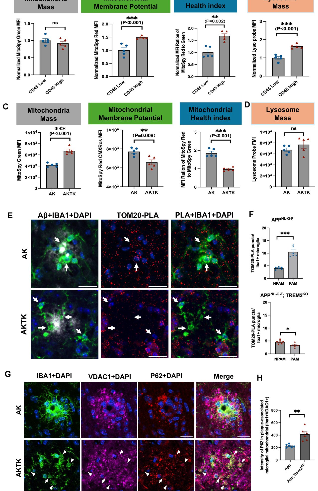</a><figcaption>Рисунок 7: Потеря TREM2 приводит к снижению митохондриального биогенеза и обновления в микроглии, ассоциированной с бляшками. (A) Анализ методом проточной цитометрии жизнеспособности митохондрий в CD45low (не связанных с бляшками) и CD45high (связанных с бляшками) клетках микроглии 9-месячных мышей AppNL-G-F с количественной оценкой митохондриальной массы (MitoTracker Green), мембранного потенциала (MitoTracker Red CMXRos) и индекса здоровья митохондрий (отношение мембранного потенциала к массе). Микроглия CD45high показывает повышенный мембранный потенциал, что указывает на расширенную биоэнергетическую емкость. (B) Лизосомальная масса (LysoTracker Deep Red) в тех же популциях; микроглия CD45high показывает более высокую лизосомальную массу, подтверждая индукцию деградационной способности. (C) Митохондриальная жизнеспособность в первичной микроглии от 9-месячных мышей AppNL-G-F и AppNL-G-F;Trem2KO (те же показатели, что и в A). Микроглия Trem2KO демонстрирует фенотип «высокая масса / низкий потенциал», указывающий на накопление метаболически некомпетентных органелл. (D) Лизосомальная масса (LysoTracker Deep Red); отсутствие различий между генотипами указывает на то, что накопление митохондрий не обусловлено лизосомальной недостаточностью. (E) Зарождающийся митохондриальный биогенез in situ по данным анализа сближения проксимальных участков (PLA) AHA-TOM20. Представительные конфокальные изображения показывают новосинтезированный TOM20 (точечные скопления TOM20-PLA, красный) внутри микроглии Iba1+ (зеленый) в нише бляшки, выраженный у AppNL-G-F и ослабленный у микроглии Trem2KO. (F) Количественная оценка количества новообразованных точечных скоплений TOM20-PLA на микроглию (количественно оценены 10–15 случайно выбранных бляшек на мышь). (G) Представительные конфокальные изображения (MIP, 5 мкм) микроглии, ассоциированной с бляшками, совместно окрашенные на VDAC1, P62 (рецептор аутофагии) и Iba1. Белые стрелки указывают на митохондрии VDAC1+ с высоким содержанием p62 в микроглии Trem2KO. Масштабная шкала: 20 мкм. (H) Количественная оценка интенсивности P62 в регионах IBA1⁺VDAC1⁺; количественно оценены 20–30 бляшек на мышь.</figcaption></figure>
<blockquote data-palette="secondary"><p class="bq-title"><svg class="i" viewBox="0 0 24 24" fill="none" stroke-width="1.5" aria-hidden="true"><path d="M12 11.5V16.5" stroke="currentColor" stroke-linecap="round" stroke-linejoin="round"/><path d="M12 7.51L12.01 7.49889" stroke="currentColor" stroke-linecap="round" stroke-linejoin="round"/><path d="M12 22C17.5228 22 22 17.5228 22 12C22 6.47715 17.5228 2 12 2C6.47715 2 2 6.47715 2 12C2 17.5228 6.47715 22 12 22Z" stroke="currentColor" stroke-linecap="round" stroke-linejoin="round"/></svg>Пояснение</p><p>Индекс здоровья митохондрий — это расчетный показатель, позволяющий отличить функционально активные митохондрии от поврежденных или деполяризованных.</p></blockquote>
<p>Для оценки биогенеза мы использовали метод метаболической метки AHA с последующим PLA-анализом для детекции вновь синтезированного белка TOM20. У мышей AppNL-G-F микроглия у бляшек активно синтезировала новые митохондрии (сигнал TOM20-PLA+; <a class="figref" href="#fig-7" data-fig="7">Рис. 7</a>E, F). У Trem2KO этот процесс был подавлен, что доказывает необходимость TREM2 для индукции митохондриального биогенеза. Несмотря на отсутствие обновления, общая масса митохондрий в клетках Trem2KO оставалась высокой (Рис. SN), что указывает на накопление старых органелл. Совместное окрашивание VDAC1 и рецептора аутофагии p62/SQSTM1 выявило агрегаты P62+/VDAC1+ в микроглии Trem2KO (<a class="figref" href="#fig-7" data-fig="7">Рис. 7</a>G, H), что свидетельствует о нарушении митофагии — процесса удаления поврежденных митохондрий.</p>
<h4>Сохранная анаболическая программа ослабевает в микроглии человека при прогрессировании болезни Альцгеймера</h4>
<p>Для проверки значимости анаболической программы, выявленной у мышей, мы проанализировали атлас транскриптомов одиночных ядер мозга человека (ssKIND), включив данные 523 доноров с известным возрастом и стадиями по Брааку (Таблица 1). Каждое ядро микроглии оценивалось по трем модулям: анаболическому, DAM (микроглия, ассоциированная с болезнью) и гомеостатическому. Анализ показал, что эти состояния занимают различные области на карте транскриптомного многообразия, что подтверждает уникальность анаболического состояния (<a class="figref" href="#fig-8" data-fig="8">Рис. 8</a>A, Рис. SN). При прогрессировании болезни от стадий 0–II к V–VI анаболический индекс значимо снижался (с поправкой на возраст β = -0,41, P = 1,8 × 10⁻⁵; Spearman R = -0,35), причем наиболее резкое падение наблюдалось между стадиями III–IV и V–VI (<a class="figref" href="#fig-8" data-fig="8">Рис. 8</a>B). Контрольные гены и количество детектируемых генов оставались стабильными, что исключает технические артефакты (Рис. SN).</p>
<figure class="fig" data-n="8" id="fig-8"><a class="fig-img" href="../../media/2026-09-23/a-self-limiting-trem2-dependent-anabolic-program-confers-mic-f8.jpg" data-zoom title="Открыть рисунок">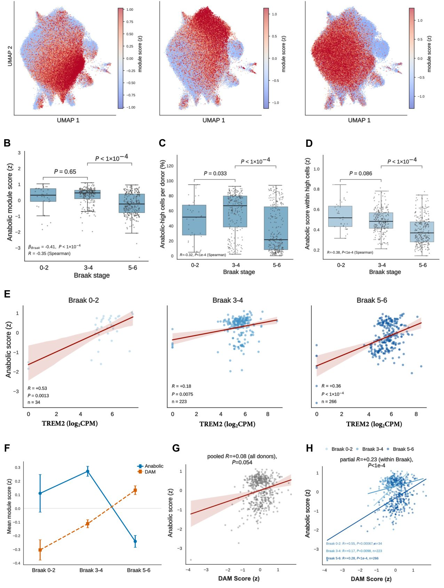</a><figcaption>Рисунок 8: Микроглиальная анаболическая программа консервативна у людей и снижается по мере прогрессирования БА. (A) Оценки модулей для каждого ядра для анаболической, DAM и гомеостатической программ, спроецированные на интегрированный UMAP микроглии человека (атлас ssKIND; 523 донора). (B) Псевдообъемная оценка анаболического модуля на уровне донора по стадиям Браака (0–II, III–IV, V–VI). Каждая точка — один донор; коробочные диаграммы показывают медиану и межквартильный размах. Анаболический балл снижается по мере стадионирования по Брааку (линейная модель β = −0,41, P = 1,8×10⁻⁵; Спирман R = −0,35), наиболее резко между стадиями III–IV и V–VI по Брааку. n = 34 / 223 / 266 доноров (Браак 0–II / III–IV / V–VI). Парные сравнения, Манна–Уитни U. (C) Доля клеток с высоким анаболическим уровнем на донора; (D) средняя оценка анаболизма внутри этих клеток с высоким уровнем; клетки были помечены как клетки с высоким анаболическим уровнем по глобальному порогу (топ 30% оценки анаболизма на клеточном уровне по всем клеткам). (E) Экспрессия TREM2 (log₂ CPM) по сравнению с оценкой анаболического модуля у доноров в разрезе стадий Браака. Спирман R положителен на каждой стадии; частичный R с контролем стадии Браака = +0,28. Красная линия — линейная аппроксимация; закрашенная полоса — 95% доверительный интервал. (F) Средние оценки анаболического и DAM модулей по стадиям Браака (планки погрешностей — стандартная ошибка среднего), показывающие расхождение к стадиям V–VI по Брааку. Частичные корреляции Спирмана с контролем стадии Браака: анаболический – TREM2 R = +0,28; анаболический – DAM R = +0,23; анаболический – гомеостатический R = +0,08 (н.д.). (G) Сопряжение анаболической программы с модулем DAM на уровне донора, объединенное по всем донорам (одиночная регрессия, объединенный Спирман R). (H) Сопряжение анаболической программы с модулем DAM на уровне донора; внутригрупповая регрессия по Брааку с частичным Спирманом R (с контролем стадии Браака).</figcaption></figure>
<p><strong>Таблица 1.</strong> Характеристики когорты набора данных микроглии человека при БА в зависимости от стадии по Брааку</p>
<div class="table" data-block><table><thead><tr><th>Характеристика</th><th>Браак 0–II</th><th>Браак III–IV</th><th>Браак V–VI</th><th>Всего</th></tr></thead><tbody><tr><td>Доноры, n</td><td>34</td><td>223</td><td>266</td><td>523</td></tr><tr><td>Возраст, лет — среднее (диапазон)</td><td>81.2 (64–96)</td><td>89.2 (68–108)</td><td>83.7 (56–101)</td><td>85.9 (56–108)</td></tr><tr><td>Пол, Ж / М</td><td>21 / 13</td><td>130 / 93</td><td>162 / 104</td><td>313 / 210</td></tr><tr><td>Платформа (snRNA / scRNA)</td><td>34 / 0</td><td>223 / 0</td><td>266 / 0</td><td>523 / 0</td></tr><tr><td>Микроглия, n (ядра)</td><td>8,445</td><td>53,609</td><td>142,229</td><td>204,283</td></tr></tbody></table></div>
<p><em>Данные включают 523 донора (313 женщин / 210 мужчин), взятых из 14 исследований одноядерной РНК-секвенирования.</em></p>
<blockquote data-palette="primary"><p class="bq-title"><svg class="i" viewBox="0 0 24 24" fill="none" stroke-width="1.5" aria-hidden="true"><path d="M12 11.5V16.5" stroke="currentColor" stroke-linecap="round" stroke-linejoin="round"/><path d="M12 7.51L12.01 7.49889" stroke="currentColor" stroke-linecap="round" stroke-linejoin="round"/><path d="M12 22C17.5228 22 22 17.5228 22 12C22 6.47715 17.5228 2 12 2C6.47715 2 2 6.47715 2 12C2 17.5228 6.47715 22 12 22Z" stroke="currentColor" stroke-linecap="round" stroke-linejoin="round"/></svg>Важно</p><p>Анаболическая активность микроглии человека прогрессивно снижается при болезни Альцгеймера, что выражается в сокращении доли клеток с высоким анаболическим индексом с 66,7% на стадиях III–IV до 21,4% на стадиях V–VI.</p></blockquote>
<blockquote data-palette="secondary"><p class="bq-title"><svg class="i" viewBox="0 0 24 24" fill="none" stroke-width="1.5" aria-hidden="true"><path d="M12 11.5V16.5" stroke="currentColor" stroke-linecap="round" stroke-linejoin="round"/><path d="M12 7.51L12.01 7.49889" stroke="currentColor" stroke-linecap="round" stroke-linejoin="round"/><path d="M12 22C17.5228 22 22 17.5228 22 12C22 6.47715 17.5228 2 12 2C6.47715 2 2 6.47715 2 12C2 17.5228 6.47715 22 12 22Z" stroke="currentColor" stroke-linecap="round" stroke-linejoin="round"/></svg>Пояснение</p><p>Стадии Браака — это система оценки тяжести нейродегенерации, основанная на распространении патологических белков в мозге: от ранних стадий (I–II) до поздних (V–VI).</p></blockquote>
<p>Мы разделили микроглию на «анаболически-активную» (верхние 30% по индексу) и проанализировали изменение их доли. Доля таких клеток резко сокращалась на поздних стадиях (P &lt; 1 × 10⁻⁴, Spearman R = -0,32; <a class="figref" href="#fig-8" data-fig="8">Рис. 8</a>C), тогда как средний индекс внутри этой группы падал незначительно (<a class="figref" href="#fig-8" data-fig="8">Рис. 8</a>D). Декомпозиция показала, что около 62% снижения обусловлено уменьшением числа таких клеток, а 38% — снижением активности внутри самих клеток (Рис. SN). Экспрессия TREM2 положительно коррелировала с анаболическим индексом на всех стадиях (<a class="figref" href="#fig-8" data-fig="8">Рис. 8</a>E), причем эта связь сохранялась даже при контроле по стадии Браака (частичные коэффициенты корреляции от +0,24 до +0,35; Рис. SN), что указывает на функциональную зависимость.</p>
<blockquote data-palette="warning"><p class="bq-title"><svg class="i" viewBox="0 0 24 24" fill="none" stroke-width="1.5" aria-hidden="true"><path d="M12 11.5V16.5" stroke="currentColor" stroke-linecap="round" stroke-linejoin="round"/><path d="M12 7.51L12.01 7.49889" stroke="currentColor" stroke-linecap="round" stroke-linejoin="round"/><path d="M12 22C17.5228 22 22 17.5228 22 12C22 6.47715 17.5228 2 12 2C6.47715 2 2 6.47715 2 12C2 17.5228 6.47715 22 12 22Z" stroke="currentColor" stroke-linecap="round" stroke-linejoin="round"/></svg>Осторожно</p><p>Исследование основано на транскриптомных данных постмортальных образцов мозга, поэтому выявленные корреляции не доказывают прямую причинно-следственную связь между TREM2 и анаболизмом.</p></blockquote>
<p>Хотя средние показатели анаболической программы и DAM-сигнатуры менялись разнонаправленно (<a class="figref" href="#fig-8" data-fig="8">Рис. 8</a>F), при контроле по стадии Браака была выявлена положительная связь между ними (частичный R = 0,23; <a class="figref" href="#fig-8" data-fig="8">Рис. 8</a>H) и с TREM2 (частичный R = +0,28, P &lt; 1 × 10⁻⁴; Рис. SN). Это означает, что на одной стадии болезни анаболизм и DAM-состояние могут сосуществовать, однако при прогрессировании патологии анаболическая программа угасает, несмотря на сохранение DAM-сигнатуры. Это подтверждает, что биосинтетическая компетентность является независимым и более точным маркером функциональной устойчивости микроглии, чем классические DAM-маркеры.</p>
<h3>Обсуждение</h3>
<h4>Микроглиальная активация при болезни Альцгеймера</h4>
<p>Традиционно активация микроглии при болезни Альцгеймера связывается с переходом в состояние заболевания-ассоциированной микроглии (DAM). Поскольку этот транскрипционный профиль включает рецепторы фагоцитоза (такие как Clec7a, Axl, MerTK), фенотип DAM часто воспринимается как эквивалент усиленной фагоцитарной функции. Однако наши результаты показывают, что это равенство неверно: на уровне единичных клеток и при анализе in situ профиль DAM и фагоцитарная способность разделяются. Оценки DAM-модуля коррелировали с патологической нагрузкой даже у клеток с метаболической недостаточностью, в то время как отдельная анаболическая программа, зависящая от TREM2 (усиленный синтез белка в сочетании с митохондриальным биогенезом), лучше отражала функционально активные клетки. Мы рассматриваем их как молекулярно независимые программы: DAM отражает транскрипционный стресс-ответ на патологию (потребность в клиренсе), а анаболическая программа — биосинтетическую способность этот клиренс осуществлять (возможность предложения). При росте амилоидной нагрузки потребность увеличивается, тогда как предложение подавляется, создавая дисбаланс спроса и предложения.</p>
<blockquote data-palette="primary"><p class="bq-title"><svg class="i" viewBox="0 0 24 24" fill="none" stroke-width="1.5" aria-hidden="true"><path d="M12 11.5V16.5" stroke="currentColor" stroke-linecap="round" stroke-linejoin="round"/><path d="M12 7.51L12.01 7.49889" stroke="currentColor" stroke-linecap="round" stroke-linejoin="round"/><path d="M12 22C17.5228 22 22 17.5228 22 12C22 6.47715 17.5228 2 12 2C6.47715 2 2 6.47715 2 12C2 17.5228 6.47715 22 12 22Z" stroke="currentColor" stroke-linecap="round" stroke-linejoin="round"/></svg>Важно</p><p>Транскрипционный профиль DAM отражает лишь потребность в клиренсе («спрос»), тогда как функциональная устойчивость микроглии определяется независимой, зависящей от TREM2 анаболической программой («предложение»), которая истощается при нарастании патологии.</p></blockquote>
<blockquote data-palette="secondary"><p class="bq-title"><svg class="i" viewBox="0 0 24 24" fill="none" stroke-width="1.5" aria-hidden="true"><path d="M12 11.5V16.5" stroke="currentColor" stroke-linecap="round" stroke-linejoin="round"/><path d="M12 7.51L12.01 7.49889" stroke="currentColor" stroke-linecap="round" stroke-linejoin="round"/><path d="M12 22C17.5228 22 22 17.5228 22 12C22 6.47715 17.5228 2 12 2C6.47715 2 2 6.47715 2 12C2 17.5228 6.47715 22 12 22Z" stroke="currentColor" stroke-linecap="round" stroke-linejoin="round"/></svg>Пояснение</p><p>DAM (Disease-Associated Microglia) — специфическое состояние микроглии при нейродегенерации, а анализ in situ позволяет изучать клетки непосредственно в их естественном тканевом окружении без разрушения структуры ткани.</p></blockquote>
<p>В периферических макрофагах метаболизм часто делится на гликолитический про воспалительный и окислительно-фосфорилирующий противовоспалительный. Микроглия вблизи бляшек не вписывается в эту бинарную схему, одновременно активируя синтез биомассы и митохондриальное дыхание, что напоминает mTOR-зависимое увеличение трансляционной и митохондриальной емкости активированных Т-клеток. Функциональный смысл этого процесса — протеостатический: непрерывное поглощение Aeta и клеточного мусора истощает лизосомальные ферменты, мембраны и АТФ быстрее, чем это компенсируется в гомеостазе. Наблюдаемая упреждающая активация рибосомального и митохондриального биогенеза поддерживает этот протеостатический ресурс. Наши данные подтверждают и расширяют гипотезу о существовании оси TREM2-mTOR, поддерживающей метаболическую стабильность микроглии: зависимая от TREM2 анаболическая программа обеспечивает ремоделирование протеома и обновление митохондрий, отделяясь от транскрипционного состояния DAM и самоограничиваясь по градиенту амилоида.</p>
<p>В рамках этой модели накопление синаптического и миелинового мусора у микроглии с нокаутом гена Trem2 (Trem2KO) может быть связано не с первичным дефектом распознавания, а с нарушением процесса деградации. Наш метаболический профиль указывает на нарушение митохондриального обновления как на возможную причину дисфункции микроглии в отсутствие TREM2. Данные единичных клеток и анализа in situ показали разделение массы органелл и их функции: микроглия Trem2KO демонстрирует фенотип «высокая масса / низкий потенциал», накапливая деполяризованные митохондрии. Мы предполагаем, что это отражает неспособность обновлять митохондриальную сеть при хроническом фагоцитарном стрессе, так как наши in vivo данные AHA-TOM20 PLA показывают необходимость TREM2 для этого биогенетического ответа. Не имея возможности синтезировать замену, клетки Trem2KO сохраняют стареющие поврежденные митохондрии, что дает увеличение общей массы при снижении мембранного потенциала и биоэнергетических последствиях.</p>
<blockquote data-palette="warning"><p class="bq-title"><svg class="i" viewBox="0 0 24 24" fill="none" stroke-width="1.5" aria-hidden="true"><path d="M12 11.5V16.5" stroke="currentColor" stroke-linecap="round" stroke-linejoin="round"/><path d="M12 7.51L12.01 7.49889" stroke="currentColor" stroke-linecap="round" stroke-linejoin="round"/><path d="M12 22C17.5228 22 22 17.5228 22 12C22 6.47715 17.5228 2 12 2C6.47715 2 2 6.47715 2 12C2 17.5228 6.47715 22 12 22Z" stroke="currentColor" stroke-linecap="round" stroke-linejoin="round"/></svg>Осторожно</p><p>Выводы о причинно-следственных связях между дефицитом митохондриального биогенеза и дисфункцией микроглии у Trem2KO носят ассоциативный характер, поскольку прямое переключение анаболической оси без затрагивания иных функций TREM2 не проводилось.</p></blockquote>
<p>Расширяя эти наблюдения на человека, мы изучили анаболическую адаптацию микроглии на интегрированном атласе единичных ядер человека, охватывающем образцы со стадиями Браака. Анаболическая программа снижалась у микроглии на поздних стадиях Браака (V-VI) и оставалась положительно связанной с TREM2 внутри стадий заболевания, что указывает на ее консервативность у людей и угасание по мере прогрессирования патологии. Градиент амилоида у мышей X04 и человеческий градиент Браака описывают одно и то же зависимое от нагрузки подавление на двух уровнях — острого фагоцитарного взаимодействия и кумулятивной патологии. Данные носят перекрестный и корреляционный характер, однако межвидовое сходство укрепляет значимость анаболической оси для болезни Альцгеймера у человека.</p>
<p>Эти наблюдения имеют значение для антиамилоидной иммунотерапии. Клиническая эффективность антител к Aeta частично зависит от способности микроглии осуществлять фагоцитоз через Fc-рецепторы, что требует больших биоэнергетических затрат. Если анаболическая программа, поддерживающая фагоцитоз, подавляется самой нагрузкой, то длительная фармакологическая стимуляция может привести микроглу к биосинтетическому истощению, когда потребность в клиренсе превышает предложение. Это порождает гипотезу, подлежащую проверке, что сочетание иммунотерапии с вмешательствами, поддерживающими анаболическую ось (например, агонистами TREM2 или метаболическими кофакторами), поможет сохранить фагоцитарную емкость микроглии и расширить терапевтическое окно.</p>
<p>Мы представляем это как гипотезу, порожденную нашими результатами, а не как доказанный терапевтический принцип, который можно напрямую проверить, измеряя анаболическую сигнатуру в тканях после иммунотерапии. Выводы имеют ограничения: во-первых, сравнения опираются на нокаут TREM2, влияющий на множество функций, поэтому без ортогонального вмешательства, нацеленного строго на анаболизм, мы не можем полностью отделить клеточно-автономные требования от сдвигов состава популяции. Во-вторых, анализ данных человека носит перекрестный и корреляционный характер. Тем не менее, наши результаты позиционируют зависимую от TREM2 анаболическую адаптацию как пространственно разрешенный маркер протеостатической компетентности микроглии, имеющий прямое значение для терапий, полагающихся на ее функции.</p>
<blockquote data-palette="primary"><p class="bq-title"><svg class="i" viewBox="0 0 24 24" fill="none" stroke-width="1.5" aria-hidden="true"><path d="M12 11.5V16.5" stroke="currentColor" stroke-linecap="round" stroke-linejoin="round"/><path d="M12 7.51L12.01 7.49889" stroke="currentColor" stroke-linecap="round" stroke-linejoin="round"/><path d="M12 22C17.5228 22 22 17.5228 22 12C22 6.47715 17.5228 2 12 2C6.47715 2 2 6.47715 2 12C2 17.5228 6.47715 22 12 22Z" stroke="currentColor" stroke-linecap="round" stroke-linejoin="round"/></svg>Важно</p><p>Снижение анаболического потенциала микроглии при нарастании патологии ставит под угрозу успех антиамилоидной иммунотерапии, предполагая необходимость совместного применения стимуляторов метаболизма для поддержания клиренса.</p></blockquote>
<h3>Методы</h3>
<p><strong>Ключевые реагенты и ресурсы</strong></p>
<div class="table" data-block><table><thead><tr><th>Реагент или ресурс</th><th>Источник</th><th>Идентификатор</th></tr></thead><tbody><tr><td><strong>Antibodies</strong></td><td></td><td></td></tr><tr><td>Anti-Amyloid β (N) (clone 82E1)</td><td>IBL Co., LTD.</td><td>Cat#10323; RRID:AB_10707424</td></tr><tr><td>Anti-Iba1</td><td>Wako</td><td>Cat#019-19741; RRID:AB_839504</td></tr><tr><td>Anti-Phospho-RPS6</td><td>Cell Signaling Technology</td><td>Cat#4858; RRID:AB_916156</td></tr><tr><td>Anti-PSD95 sdAb (FluoTag-X2, AF568)</td><td>Synaptic Systems</td><td>Cat#N3702-AF568-L; RRID:(not assigned]</td></tr><tr><td>Anti-VGLUT1 sdAb (FluoTag, At488)</td><td>Synaptic Systems</td><td>Cat#N1602-At488-L; RRID: (not assigned)</td></tr><tr><td>Anti-TOM20</td><td>Proteintech</td><td>Cat#11802-1-AP; RRID:AB_2207530</td></tr><tr><td>Anti-VDAC1 (CoraLite488)</td><td>Proteintech</td><td>Cat#CL488-10866; RRID:AB_3672468</td></tr><tr><td>Anti-MBP</td><td>Cell Signaling Technology</td><td>Cat#78896; RRID:AB_2799920</td></tr><tr><td>Anti-Cleaved Caspase-3 (Asp175) (9661)</td><td>Cell Signaling Technology</td><td>Cat#9661; RRID:AB_2341188</td></tr><tr><td>Anti-CD74</td><td>BioLegend</td><td>Cat#151002; RRID:AB_2566502</td></tr><tr><td>Anti-CD11b (clone M1/70)</td><td>Invitrogen</td><td>Cat# 14-0112-82, clone M1/70; RRID:AB_464935</td></tr><tr><td>Anti-CD16/32 (Fc block)</td><td>eBioscience/BD</td><td>Cat# 14-0161-82</td></tr><tr><td><strong>Chemicals, Peptides, and Recombinant Proteins</strong></td><td></td><td></td></tr><tr><td>Azidohomoalanine (AHA)</td><td>Thermo Fisher Scientific (Invitrogen)</td><td>Cat#C10102</td></tr><tr><td>Methoxy-X04</td><td>Tocris Bioscience</td><td>Cat#4920</td></tr><tr><td>Alexa Fluor 647-Alkyne</td><td>Thermo Fisher Scientific</td><td>Cat# A10278</td></tr><tr><td>Biotin-Alkyne</td><td>Thermo Fisher Scientific</td><td>Cat# B10185</td></tr><tr><td>Fixable Viability Dye eFluor 780</td><td>eBioscience</td><td>Cat#65-0865-14</td></tr><tr><td><strong>Critical Commercial Assays</strong></td><td></td><td></td></tr><tr><td>Click-iT Cell Reaction Buffer Kit</td><td>Thermo Fisher Scientific</td><td>Cat#C10269</td></tr><tr><td>Duolink In Situ PLA probes &amp; reagents</td><td>Sigma-Aldrich</td><td>Cat# DUO92101</td></tr><tr><td>Neural Tissue Dissociation Kit (P)</td><td>Miltenyi Biotec</td><td>Cat#130-107-677</td></tr><tr><td>Myelin Removal Beads II</td><td>Miltenyi Biotec</td><td>Cat#130-096-733</td></tr><tr><td>CD11b MicroBeads</td><td>Miltenyi Biotec</td><td>Cat#130-049-601</td></tr><tr><td>Quick-RNA MiniPrep</td><td>Zymo Research</td><td>Cat#R1055</td></tr><tr><td>10x Genomics Chromium Next GEM Single Cell 3' Kit</td><td>10x Genomics</td><td>Cat# 1000779</td></tr><tr><td><strong>Deposited Data</strong></td><td></td><td></td></tr><tr><td>Bulk RNA-seq and scRNA-seq (mouse microglia)</td><td>This paper; GEO</td><td>GEO: pending</td></tr><tr><td>Mass-spectrometry proteomics (TMT)</td><td>This paper; ProteomeXchange/PRIDE</td><td>PXD: pending</td></tr><tr><td>Human snRNA-seq microglia (ssKIND atlas, 523 donors)</td><td>ssKIND database</td><td>https://bmblx.bmi.osumc.edu/sskind/</td></tr><tr><td><strong>Experimental Models: Organisms/Strains</strong></td><td></td><td></td></tr><tr><td>Mouse: AppNL-G-F</td><td>Dr. Takaomi Saido (RIKEN Center for Brain Science)</td><td>RRID: (not assigned)</td></tr><tr><td>Mouse: Trem2 knockout (Trem2KO)</td><td>The Jackson Laboratory</td><td>Strain#027197</td></tr><tr><td><strong>Software and Algorithms</strong></td><td></td><td></td></tr><tr><td>STAR aligner</td><td>Dobin et al.</td><td>v2.7.x; RRID:SCR_004463</td></tr><tr><td>Flexbar</td><td></td><td>v3.x</td></tr><tr><td>featureCounts (Subread)</td><td></td><td>v2.x; RRID:SCR_012919</td></tr><tr><td>R</td><td></td><td>v4.x; RRID:SCR_001905</td></tr><tr><td>DESeq2</td><td>Love et al.</td><td>v1.42.1; RRID:SCR_015687</td></tr><tr><td>EnhancedVolcano</td><td></td><td>v1.x</td></tr><tr><td>limma</td><td></td><td>v3.x; RRID:SCR_010943</td></tr><tr><td>clusterProfiler</td><td></td><td>v4.11.0.2; RRID:SCR_016884</td></tr><tr><td>Ingenuity Pathway Analysis (IPA)</td><td>QIAGEN</td><td>RRID:SCR_008653</td></tr><tr><td>coin (permutation tests)</td><td></td><td>v1.4.x</td></tr><tr><td>VennDiagram</td><td></td><td>N/A</td></tr><tr><td>Proteome Discoverer</td><td>Thermo Fisher Scientific</td><td>V3.0; RRID:SCR_014477</td></tr><tr><td>ImageJ / Fiji</td><td>NIH</td><td>RRID:SCR_003070</td></tr><tr><td>Imaris</td><td>Oxford Instruments</td><td>v11.0; RRID:SCR_007370</td></tr><tr><td>Cell Ranger</td><td>10x Genomics</td><td>v7.0.0; RRID:SCR_017344</td></tr><tr><td>Seurat</td><td></td><td>v4.x; RRID:SCR_016341</td></tr><tr><td>DoubletFinder</td><td></td><td>v2.0.3</td></tr><tr><td>scanpy</td><td></td><td>v1.11.5; RRID:SCR_018139</td></tr><tr><td>anndata</td><td></td><td>v0.11.4</td></tr><tr><td>leidenalg / python-igraph</td><td></td><td>v0.10.2 / v0.11.9</td></tr><tr><td>umap-learn</td><td></td><td>v0.5.9</td></tr><tr><td>numpy / pandas / scipy / statsmodels</td><td></td><td>v2.2.5 / v2.3.3 / v1.15.3 / v0.14.5</td></tr><tr><td>matplotlib / seaborn</td><td></td><td>v3.10.8 / v0.13.2</td></tr><tr><td>GraphPad Prism</td><td>GraphPad Software</td><td>v9.5.1; RRID:SCR_002798</td></tr></tbody></table></div>
<h4>Экспериментальные модели и характеристики объектов</h4>
<p>В исследовании использовали мышей линий App^NL-G-F и мышей с нокаутом гена Trem2 (Trem2KO, линия #027197). Для получения двойных мутантов скрещивали мышей App^NL-G-F с Trem2KO, что позволило вывести гомозиготное по обеим модификациям потомство App^NL-G-F; Trem2KO. Животных содержали в условиях барьерного питомника, свободных от патогенов, при стандартном 12-часовом световом и темновом цикле, с неограниченным доступом к воде и пище. Плотность заселения составляла не более 5 особей в одной клетке. В экспериментах задействовали как самцов, так и самок. Все манипуляции с животными выполнялись в строгом соответствии с нормами Национальных институтов здоровья (NIH) и были предварительно одобрены Комитетом по уходу и использованию лабораторных животных Университета штата Огайо (IACUC). Для анализа данных микроглии человека отобрали клетки из интегрированного атласа одиночных ядер ssKIND. Отбирали клеточный материал, аннотированный как микроглиальный (`cell_type = “Microglia”`), полученный от доноров с подтвержденным диагнозом болезни Альцгеймера (`Disease_consistent = “AD”`) и имеющий достоверные метаданные о возрасте и стадиях Браака. Стадии Браака были разделены на диапазоны 0–II, III–IV и V–VI; возраст доноров составлял 51–78 лет и более 78 лет (самая младшая группа 20–51 года не содержала подходящих микроглиальных клеток при Альцгеймере). Итоговый массив данных включил 204 283 микроглиальных клетки от 523 доноров из различных областей мозга. Необработанные целочисленные значения счетчиков сохраняли для псевдобулкового объединения, а интегрированное латентное пространство scVI (размерностью 30) использовали для кластеризации и встраивания. Если не указано иное, анализы объединяют доноров различных возрастных групп, разделяя их только по стадиям Браака.</p>
<blockquote data-palette="secondary"><p class="bq-title"><svg class="i" viewBox="0 0 24 24" fill="none" stroke-width="1.5" aria-hidden="true"><path d="M12 11.5V16.5" stroke="currentColor" stroke-linecap="round" stroke-linejoin="round"/><path d="M12 7.51L12.01 7.49889" stroke="currentColor" stroke-linecap="round" stroke-linejoin="round"/><path d="M12 22C17.5228 22 22 17.5228 22 12C22 6.47715 17.5228 2 12 2C6.47715 2 2 6.47715 2 12C2 17.5228 6.47715 22 12 22Z" stroke="currentColor" stroke-linecap="round" stroke-linejoin="round"/></svg>Пояснение</p><p>Нокаут гена — это метод намеренного отключения определенного гена у лабораторных животных для изучения его функций, а стадии Браака отражают степень распространения патологических изменений в головном мозге при нейродегенеративных заболеваниях.</p></blockquote>
<h4>Детали методов</h4>
<p>Для метаболического мечения вновь синтезируемых белков in vivo мышам внутрибрюшинно вводили азидогомоаланин (AHA) в дозе 50 мг/кг, растворенный в стерильном фосфатно-солевом буфере (PBS). Животных выводили из эксперимента через 16 часов после инъекции. Для проведения проточной цитометрии суспензированные клетки инкубировали с реактивом Alexa Fluor 647-Alkyne с использованием коммерческого набора Click-iT Cell Reaction Buffer Kit в строгом соответствии с рекомендациями производителя. В методе анализа близкого расположения молекул (PLA) свободные срезы ткани мозга обрабатывали биотином-алкином с тем же набором буферов до этапа инкубации с первичными антителами. Выделение и сортировку микроглии взрослых мышей проводили методом магнитной сепарации (MACS). Животных наркотизировали и перфузировали через левый желудочек сердца охлажденным PBS для вымывания циркулирующих лейкоцитов. Извлеченный мозг охлаждали, измельчали и диссоциировали при помощи специального набора реагентов Neural Tissue Dissociation Kit (P) и прибора gentleMACS Tissue Dissociator. Полученную суспензию фильтровали через сетку с размером пор 70 мкм и центрифугировали при 300 × g в течение 10 минут. Миелин удаляли с помощью магнитных микросфер Myelin Removal Beads II. Очищенную суспензию одиночных клеток сразу использовали для цитометрии или дополнительно обогащали для транскрипционного анализа на колонках LS с использованием микросфер CD11b MicroBeads.</p>
<p>Для оценки уровня амилоидной нагрузки применяли соединение Метокси-X04 (X04), которое растворяли в диметилсульфоксиде (DMSO) с последующим разведением смесью пропиленгликоля и PBS в соотношении 1:1 до получения стабильной желтовато-зеленой эмульсии. Свежеприготовленный раствор вводили внутрибрюшинно в дозе 10 мг/кг за 16 часов до извлечения тканей мозга. В ходе проточной цитометрии клетки инкубировали с красителем жизнеспособности Fixable Viability Dye eFluor 780 и блоком Fc-рецепторов anti-CD16/32 для предотвращения неспецифического связывания и исключения мертвых клеток. Затем проводили окрашивание флуоресцентно мечеными антителами к маркерам CD11b, CD45 и CX3CR1. Живые клетки микроглии выделяли в гейты как CD45^int; CD11b⁺; CX3CR1⁺ с разделением на положительные (X04⁺) и отрицательные (X04⁻) фракции по сигналу в канале возбуждения DAPI (405 нм). В качестве биологических отрицательных контролей для настройки порогов гейтирования использовали интактных мышей дикого типа, которым также вводили Метокси-X04.</p>
<h4>Анализ методом PLA (In Situ Proximity Ligation Assay)</h4>
<p>Для визуализации новообразованных митохондриальных белков срезы мозга мышей, которым вводили AHA, подвергали «клик-реакции» с биотином-алкином. После промывки срезы инкубировали с антителами к TOM20 (1:500) и биотину (1:500). Далее применяли зонды PLA (Duolink) согласно протоколу производителя для амплификации сигнала.</p>
<blockquote data-palette="secondary"><p class="bq-title"><svg class="i" viewBox="0 0 24 24" fill="none" stroke-width="1.5" aria-hidden="true"><path d="M12 11.5V16.5" stroke="currentColor" stroke-linecap="round" stroke-linejoin="round"/><path d="M12 7.51L12.01 7.49889" stroke="currentColor" stroke-linecap="round" stroke-linejoin="round"/><path d="M12 22C17.5228 22 22 17.5228 22 12C22 6.47715 17.5228 2 12 2C6.47715 2 2 6.47715 2 12C2 17.5228 6.47715 22 12 22Z" stroke="currentColor" stroke-linecap="round" stroke-linejoin="round"/></svg>Пояснение</p><p>Метод PLA позволяет выявить белковые взаимодействия или присутствие специфических молекул в клетке с высокой точностью, создавая флуоресцентный сигнал только при сближении двух целевых антител на расстояние менее 40 нм.</p></blockquote>
<h4>Секвенирование РНК и биоинформатика</h4>
<p>Общую РНК из микроглии выделяли набором Quick-RNA, проверяя качество на TapeStation (индекс целостности РНК &gt; 8). Библиотеки cDNA готовили по протоколу SMART Seq® mRNA LP Kit и секвенировали на системе HiSeq 4000. Первичные данные FASTQ выравнивали на геном мыши (GRCm39) с помощью STAR (v2.7.10a), адаптеры удаляли через Flexbar, а подсчет ридов вели в featureCounts. Анализ проводили в среде R (v4.3.3).</p>
<h4>Количественный протеомный анализ</h4>
<p>Лизаты мозга (5% SDS, 50 мМ TEAB) обрабатывали с использованием устройства STrap Midi MS (по 2000 мкг белка на образец). Процедура включала восстановление DTT, алкилирование иодоацетамидом и переваривание трипсином/Lys-C. Пептиды метили TMT-метками, объединяли и фракционировали методом ВЭЖХ (12 фракций). Анализ проводили на системе LC-MS/MS с идентификацией в Proteome Discoverer 2.5. Значимыми считались изменения при FDR ≤ 0.05 (метод Бенджамини-Хохберга).</p>
<h4>Гистологический анализ и микроскопия</h4>
<p>Срезы мозга толщиной 40 мкм окрашивали иммунофлуоресцентным методом с использованием первичных антител (включая маркеры Aβ, Iba1, PSD95, VGLUT1, TOM20, VDAC1, MBP, Caspase-3, CD74) и вторичных антител. Изображения получали на конфокальных микроскопах ZEISS Axio Observer или Nikon AXR. Количественную оценку 2D-изображений проводили в ImageJ, используя автоматические пороги «Otsu» или «Triangle» для выделения областей интереса (ROI). Статистику рассчитывали через t-критерий или ANOVA.</p>
<h4>Одноклеточное секвенирование (scRNA-seq)</h4>
<p>Библиотеки готовили с помощью 10x Genomics Chromium (10 000 клеток на образец) и секвенировали на Illumina NovaSeq (50 000–100 000 ридов на клетку). Данные обрабатывали в Cell Ranger (v7.0.0) с выравниванием на геном mm10. В Seurat (v4.1.1) отсеивали клетки с &lt; 1500 признаками, &lt; 3000 UMI или &gt; 5% митохондриальных ридов.</p>
<h4>Статистический анализ и функциональное обогащение</h4>
<p>Дифференциальную экспрессию генов (DEG) рассчитывали в DESeq2 (v1.42.1) с поправкой на множественные сравнения (FDR &lt; 0.05). Анализ путей проводили в IPA (Ingenuity Pathway Analysis) с использованием z-score для предсказания активации или ингибирования функций. Gene Set Enrichment Analysis (GSEA) выполняли через пакет clusterProfiler, ранжируя гены по log2 Fold Change и p-значению. Результаты визуализировали через точечные диаграммы (dot plots) и сети «ген-концепция» (cnetplot).</p>
<h4>3D-конфокальная визуализация и иерархическое статистическое моделирование</h4>
<p>Для количественной оценки морфологических и биохимических свойств Iba1-позитивных (Iba1+) микроглиальных областей интереса (ROI) использовался конфокальный микроскоп Nikon AXR. Из-за высокой плотности микроглии у мышей линии AppNL-G-F, ROI определялись как морфологические единицы, а не отдельные клетки. Реконструкция и анализ проводились в ПО Imaris (v11.0). Сегментация поверхностей Iba1+ выполнялась с помощью алгоритма машинного обучения для обеспечения объективности. Объемная колокализация маркеров оценивалась через пороговые значения, скорректированные на фоновый шум, с последующим переводом объемов в количество вокселей. Интенсивность флуоресценции маркеров измерялась непосредственно по поверхности Iba1+. Микроглия классифицировалась как ассоциированная с бляшками (PAM), если она контактировала с кластером амилоида, или как неассоциированная (NPAM).</p>
<blockquote data-palette="secondary"><p class="bq-title"><svg class="i" viewBox="0 0 24 24" fill="none" stroke-width="1.5" aria-hidden="true"><path d="M12 11.5V16.5" stroke="currentColor" stroke-linecap="round" stroke-linejoin="round"/><path d="M12 7.51L12.01 7.49889" stroke="currentColor" stroke-linecap="round" stroke-linejoin="round"/><path d="M12 22C17.5228 22 22 17.5228 22 12C22 6.47715 17.5228 2 12 2C6.47715 2 2 6.47715 2 12C2 17.5228 6.47715 22 12 22Z" stroke="currentColor" stroke-linecap="round" stroke-linejoin="round"/></svg>Пояснение</p><p>ROI (область интереса) — это выделенный фрагмент изображения, который анализируется отдельно, а GLMM — статистический метод, позволяющий учитывать как фиксированные эффекты (генотип, статус бляшек), так и случайные (индивидуальные особенности животных), что критично для вложенных данных.</p></blockquote>
<p>Для учета иерархической структуры данных применялись обобщенные линейные смешанные модели (GLMM) в среде R (пакеты glmmTMB, emmeans). Для пропорциональных данных использовалась бета-биномиальная модель, для непрерывных (интенсивность) — гамма-распределение. Адекватность моделей проверялась пакетом DHARMa. Результаты представлялись как оценочные маргинальные средние (EMM) с 95% доверительными интервалами.</p>
<h4>Количественный анализ включений в микроглию и непараметрическая статистика</h4>
<p>Плотность включений (PSD95, MBP) оценивалась «слепым» методом: первый аналитик размечал бляшки, второй считал включения внутри них. Плотность выражалась как число включений на 10⁵ µ m³ объема бляшки. Из-за отсутствия симптомов у контрольной группы (AK) и высокой вариативности у экспериментальной (AKTK) стандартные GLMM не сходились. Применялся непараметрический тест Вилкоксона с точной перестановкой (пакет coin, v1.4.3). Значимость определялась по p-значениям точного перестановочного теста.</p>
<h4>Предварительная нормализация и удаление дублетов</h4>
<p>В Seurat проводилась нормализация данных после контроля качества (QC). Вариации, связанные с процентом митохондриальных и рибосомальных генов, не удалялись из-за их метаболической значимости. Дублеты (ошибочно объединенные клетки) выявлялись через DoubletFinder (v2.0.3) и удалялись (в среднем 10% от выборки). В итоговый анализ вошли 26 096 синглетов.</p>
<h4>Нормализация SCTransform, интеграция и кластеризация</h4>
<p>Матрица экспрессии нормализовалась через SCTransform, отбирались 3000 наиболее вариабельных генов для снижения размерности. Интеграция четырех образцов проводилась функциями FindIntegrationAnchors и IntegrateData (reciprocal PCA, k=5). Кластеризация выполнялась алгоритмом Лувена по 20 главным компонентам (разрешение 0.3). Визуализация — UMAP.</p>
<h4>Аннотация кластеров и дифференциальная экспрессия</h4>
<p>Типы клеток определялись через маркеры (тест Вилкоксона) и сравнение с базой данных AppNL-G-F. После исключения немикроглиальных клеток (осталось 25 776) проводилась повторная кластеризация (разрешение 0.2), выделившая 7 состояний микроглии. Дифференциально экспрессируемые гены (DE) определялись с поправкой Бонферрони (p &lt; 0.05).</p>
<h4>Анализ генных модулей и сигнатур</h4>
<p>Для оценки состояний микроглии (HM, ARM, TRM, IRM, CPM, рибосомальная сигнатура, DAM) использовалась функция AddModuleScore. Распределение экспрессии визуализировалось через «скрипичные» графики (stacked violin plots).</p>
<h4>Мультиомика и интегративный анализ</h4>
<p>Интегрировались данные РНК-секвенирования и протеомики микроглии (3 и 9 месяцев, AppNL-G-F и Trem2KO). Пересечение молекул визуализировалось диаграммой Венна (пакет VennDiagram, v1.7.3). Для поиска общих процессов применялся метод ActivePathways с объединением p-значений по методу Брауна и весовым вектором [mRNA=1, protein=1] для выявления конкордантных изменений.</p>
<h4>Интегративный анализ обогащения путей</h4>
<p>Функциональное обогащение выполнялось с помощью пакета ActivePathways в R для выявления биологических процессов, значимо представленных в интегрированных наборах данных. Анализ использовал список генов, ранжированный по объединенным P-значениям, полученным на основе направленной интеграции данных. Для определения оптимального обогащения терминов Gene Ontology (GO) применялся ранговый гипергеометрический тест. Коллекция наборов генов (m5.go.v2023.2.Mm.symbols.gmt) фильтровалась так, чтобы включить только пути, содержащие от 10 до 500 аннотированных генов, что позволяло минимизировать смещения от чрезмерно специфичных или слишком общих терминов. Значимые термины GO определялись с использованием поправки Холма на уровень семейжеских ошибок (FWER) &lt; 0.05. Для облегчения биологической интерпретации уникальные и значимые термины GO визуализировались с помощью гистограмм, где ось x представляла -\log<sub>10</sub>(скорректированные P-значения), а ось y перечисляла конкретные термины GO, сгруппированные по их более широким функциональным категориям.</p>
<h4>Статистический анализ</h4>
<p>Статистический анализ проводился с использованием программного обеспечения GraphPad Prism 9 (v9.5.1; GraphPad Software, Сан-Диего, Калифорния, США). Данные представлены как среднее ± стандартная ошибка среднего (SEM). Парные сравнения анализировались с помощью двусторонних непарных t-тестов. Множественные сравнения анализировались с использованием однофакторного или двуфакторного дисперсионного анализа (ANOVA) с последующими пост-hoc тестами Тьюки или Сидака. Значение P &lt; 0.05 считалось статистически значимым.</p>
<blockquote data-palette="secondary"><p class="bq-title"><svg class="i" viewBox="0 0 24 24" fill="none" stroke-width="1.5" aria-hidden="true"><path d="M12 11.5V16.5" stroke="currentColor" stroke-linecap="round" stroke-linejoin="round"/><path d="M12 7.51L12.01 7.49889" stroke="currentColor" stroke-linecap="round" stroke-linejoin="round"/><path d="M12 22C17.5228 22 22 17.5228 22 12C22 6.47715 17.5228 2 12 2C6.47715 2 2 6.47715 2 12C2 17.5228 6.47715 22 12 22Z" stroke="currentColor" stroke-linecap="round" stroke-linejoin="round"/></svg>Пояснение</p><p>&gt; Дисперсионный анализ (ANOVA) и t-тесты позволяют проверить, есть ли реальные различия между группами экспериментов, исключая случайный разброс данных.</p></blockquote>
<h4>Генные модули</h4>
<p>Оценивались четыре генных модуля. Анаболический модуль объединяет субъединицы окислительного фосфорилирования (ATP5E, COX4I1, NDUFA1, NDUFB9, NDUFS8, UQCRB, COX7B) и гены трансляции белка (RPS3A, RPS9, RPL10, RPL13, RPL18A, EIF3F, EEF1A1, MRPL42, MRPS14). Модуль микроглии, ассоциированной с заболеванием (DAM), включал SPP1, APOE, CD9, ITGAX, GPNMB, CD68, CST7, LPL, LGALS3; гомеостатический модуль включал P2RY12, CX3CR1, TMEM119, HEXB. Трек housekeeping (контроль «домашнего хозяйства»: ACTB, GAPDH, B2M) оценивался исключительно как контроль качества РНК.</p>
<h4>Псевдообъемные профили доноров и оценки модулей</h4>
<p>Для каждого донора сырые счета микроглии суммировались по генам, нормализовались в счета на миллион (CPM) и \log<sub>2</sub>(CPM+1) для получения псевдообъемного профиля донора. Оценка модуля донора представляет собой среднее значение по всем генам модуля z-оценки \log<sub>2</sub>CPM, причем z-оценка вычислялась по всем донорам. Такой дизайн на уровне донора (одно значение на донора) позволяет избежать завышения значимости, возникающего при рассмотрении отдельных клеток в качестве независимых реплик (псевдорепликация).</p>
<h4>Клеточные оценки, ре-кластеризация и встраивание</h4>
<p>Для визуализации одиночных клеток (UMAP) оценки модулей для каждой клетки вычислялись как среднее по генам модуля z-оценки лог-нормализованной экспрессии, с вычислением z по клеткам. Микроглия была повторно кластеризована на интегрированном латентном пространстве scVI, ограниченном этими клетками: граф k-ближайших соседей (k = 15) был построен на 30-мерном латентном пространстве, кластеризация Лейдена при разрешении 0.4 дала 11 субкластеров, а UMAP был перестроен из того же графа. Точечный график модульных генов обобщает среднюю экспрессию (z по кластерам) и долю экспрессирующих клеток на субкластер.</p>
<h4>Стратификация TREM2 и DAM</h4>
<p>Клетка оценивалась как TREM2-положительная, если она содержала по крайней мере один счет TREM2, и TREM2-отрицательная в противном случае; для каждого донора рассчитывалась доля TREM2-положительных клеток и раздельные псевдообъемные профили для TREM2-положительных / TREM2-отрицательных клеток. Клетки с высоким уровнем DAM определялись как верхняя терциль клеточной оценки DAM (вычисленной по всем клеткам); псевдообъем донора, ограниченный клетками с высоким DAM, использовался для анализа внутри DAM. TREM2 является низкоуровневым транскриптом в данных одиночных ядер из капель, поэтому доля TREM2-положительных клеток отражает чувствительность детектирования и интерпретируется сравнительно (в разрезе стадий Браака), а не как абсолютная доля.</p>
<blockquote data-palette="secondary"><p class="bq-title"><svg class="i" viewBox="0 0 24 24" fill="none" stroke-width="1.5" aria-hidden="true"><path d="M12 11.5V16.5" stroke="currentColor" stroke-linecap="round" stroke-linejoin="round"/><path d="M12 7.51L12.01 7.49889" stroke="currentColor" stroke-linecap="round" stroke-linejoin="round"/><path d="M12 22C17.5228 22 22 17.5228 22 12C22 6.47715 17.5228 2 12 2C6.47715 2 2 6.47715 2 12C2 17.5228 6.47715 22 12 22Z" stroke="currentColor" stroke-linecap="round" stroke-linejoin="round"/></svg>Пояснение</p><p>&gt; Псевдообъемное усреднение (pseudobulk) объединяет данные множества клеток одного донора, что помогает снизить уровень «шума» от пустых капель и технологических артефактов секвенирования.</p></blockquote>
<h4>Статистика</h4>
<p>Снижение анаболических процессов по стадиям Браака проверялось методом обычных наименьших квадратов на псевдообъеме доноров (оценка ~ возраст + Браак + возраст × Браак); медиана генов на клетку, процент митохондриальных ридов и модуль housekeeping моделировались аналогично в качестве контроля качества РНК. Парные сравнения между соседними стадиями Браака проводились с помощью U-критерия Манна–Уитни (на уровне доноров, непарный). Связь между оценками модулей и экспрессией TREM2 оценивалась с помощью ранговой корреляции Спирмена (\rho, на рисунках обозначается как R) в целом, внутри каждой стадии Браака и внутри клеток с высоким DAM; ранговая корреляция использовалась, поскольку оценки на уровне донора содержат выбросы, к которым корреляция Пирсона чувствительна.</p>
<p>Для разделения связи, не зависящей от стадии заболевания, и общего тренда между стадиями (парадокс Симпсона, при котором объединенная корреляция анаболизма и DAM маскируется противоположными градиентами Браака для этих двух программ), вычислялись частные корреляции Спирмена с контролем по стадиям Браака. Диссоциация DAM и анаболизма была обобщена средними оценками модулей по стадиям; изменение внутристадийной корреляции анаболизма и DAM между ранними (Браак 0–II/III–IV) и поздними (Браак V–VI) стадиями проверялось с помощью z-сравнения Фишера. Чтобы выяснить, является ли снижение анаболизма на уровне доноров композиционным или внутриклеточным эффектом, клетки помечались как анаболически-высокие по единому глобальному порогу (верхние 30% клеточной оценки анаболизма по всем клеткам); для каждого донора мы вычисляли долю анаболически-высоких клеток и среднюю оценку внутри них. Изменение среднего значения по донорам от стадий 3–4 к стадиям 5–6 было разделено на композиционный и внутриклеточный компоненты с помощью декомпозиции сдвига-доли (shift-share). Все тесты были двусторонними.</p>
<h4>Программное обеспечение</h4>
<p>Все анализы выполнялись на Python 3.10.6. Обработка данных одиночных ядер, построение графа соседей и встраивание UMAP выполнялись с помощью scanpy (v1.11.5) 46 и anndata (v0.11.4) 47; субкластеры определялись кластеризацией Лейдена с использованием leidenalg (v0.10.2) 48 и python-igraph (v0.11.9), а встраивания вычислялись с помощью umap-learn (v0.5.9) 49. Статистический анализ микроглии использовал numpy (v2.2.5), pandas (v2.3.3), scipy (v1.15.3) 50 и statsmodels (v0.14.5). Рисунки генерировались с использованием matplotlib (v3.10.8) 51 и seaborn (v0.13.2) 52.</p>
<h4>Анализ одиночных ядер</h4>
<p>В данном исследовании все доноры были проанализированы с использованием метода секвенирования РНК единичных ядер (single-nucleus RNA-seq). Для оценки прогрессирования нейродегенеративного процесса все образцы были распределены на три группы в соответствии со стадиями Браака: начальные стадии (0–II), промежуточные стадии (III–IV) и тяжелые стадии (V–VI).</p>
<blockquote data-palette="secondary"><p class="bq-title"><svg class="i" viewBox="0 0 24 24" fill="none" stroke-width="1.5" aria-hidden="true"><path d="M12 11.5V16.5" stroke="currentColor" stroke-linecap="round" stroke-linejoin="round"/><path d="M12 7.51L12.01 7.49889" stroke="currentColor" stroke-linecap="round" stroke-linejoin="round"/><path d="M12 22C17.5228 22 22 17.5228 22 12C22 6.47715 17.5228 2 12 2C6.47715 2 2 6.47715 2 12C2 17.5228 6.47715 22 12 22Z" stroke="currentColor" stroke-linecap="round" stroke-linejoin="round"/></svg>Пояснение</p><p>Секвенирование РНК единичных ядер (snRNA-seq) позволяет изучать экспрессию генов на уровне отдельных клеток или ядер, что критически важно для гетерогенной ткани головного мозга.</p></blockquote>
<p>Полученные профили экспрессии сопоставлялись между выделенными группами стадий Браака для выявления транскрипционных изменений, сопровождающих развитие патологии.</p>
<figure class="fig" data-n="S3" id="fig-S3"><a class="fig-img" href="../../media/2026-09-23/a-self-limiting-trem2-dependent-anabolic-program-confers-mic-fS3.jpg" data-zoom title="Открыть рисунок">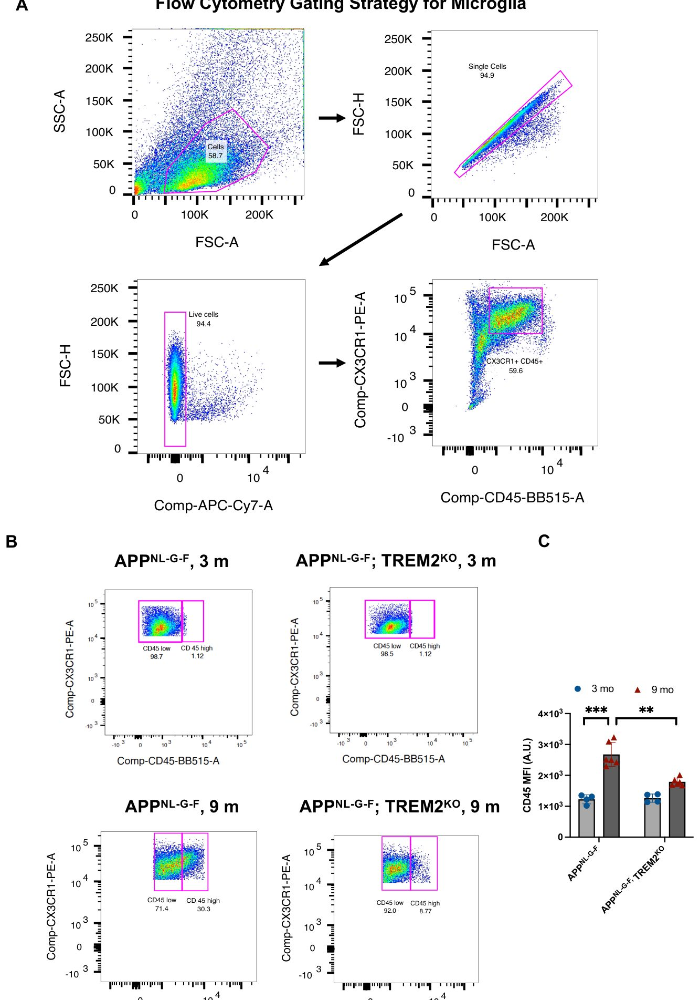</a><figcaption>Дополнительный рисунок 3. (A) Репрезентативная стратегия гейтирования при проточной цитометрии, использованная для выделения живых одиночных микроглиальных клеток (CX3CR1+ CD45+) из суспензии ткани мозга. (B) Репрезентативные графики проточной цитометрии, иллюстрирующие временное увеличение популяции микроглии с высоким уровнем CD45 в возрасте от 3 до 9 месяцев у мышей AppNL-G-F. Обратите внимание, что это увеличение резко выражено в меньшей степени у мышей AppNL-G-F;Trem2KO. (C) Количественная оценка средней интенсивности флуоресценции (MFI) CD45 в первичной микроглии, выделенной из мышей AppNL-G-F и AppNL-G-F;Trem2KO в возрасте 3 и 9 месяцев. (D) Репрезентативные конфокальные изображения фосфорилированного рибосомного белка S6 (p-RPS6, Ser235/236) в микроглие, ассоциированной с бляшками, у 9-месячных мышей AppNL-G-F и AppNL-G-F;Trem2KO, окрашенные совместно на Iba1 и Aβ. (E) Количественная оценка интенсивности p-RPS6 на одну клетку микроглии. n = 6–8 мышей в группе. ***P &lt; 0.001 по двустороннему непарному t-тесту.</figcaption></figure>
<figure class="fig" data-n="S3"><a class="fig-img" href="../../media/2026-09-23/a-self-limiting-trem2-dependent-anabolic-program-confers-mic-fS3-2.jpg" data-zoom title="Открыть рисунок">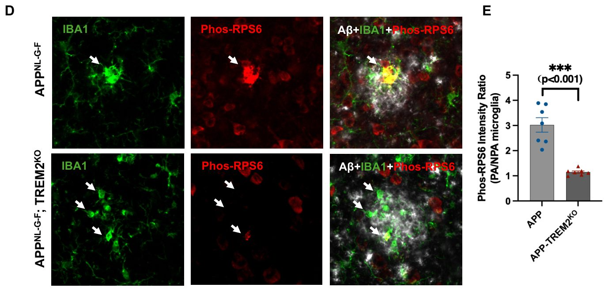</a><figcaption>Рис. S3 (продолжение 2)</figcaption></figure>
<figure class="fig" data-n="S4" id="fig-S4"><a class="fig-img" href="../../media/2026-09-23/a-self-limiting-trem2-dependent-anabolic-program-confers-mic-fS4.jpg" data-zoom title="Открыть рисунок">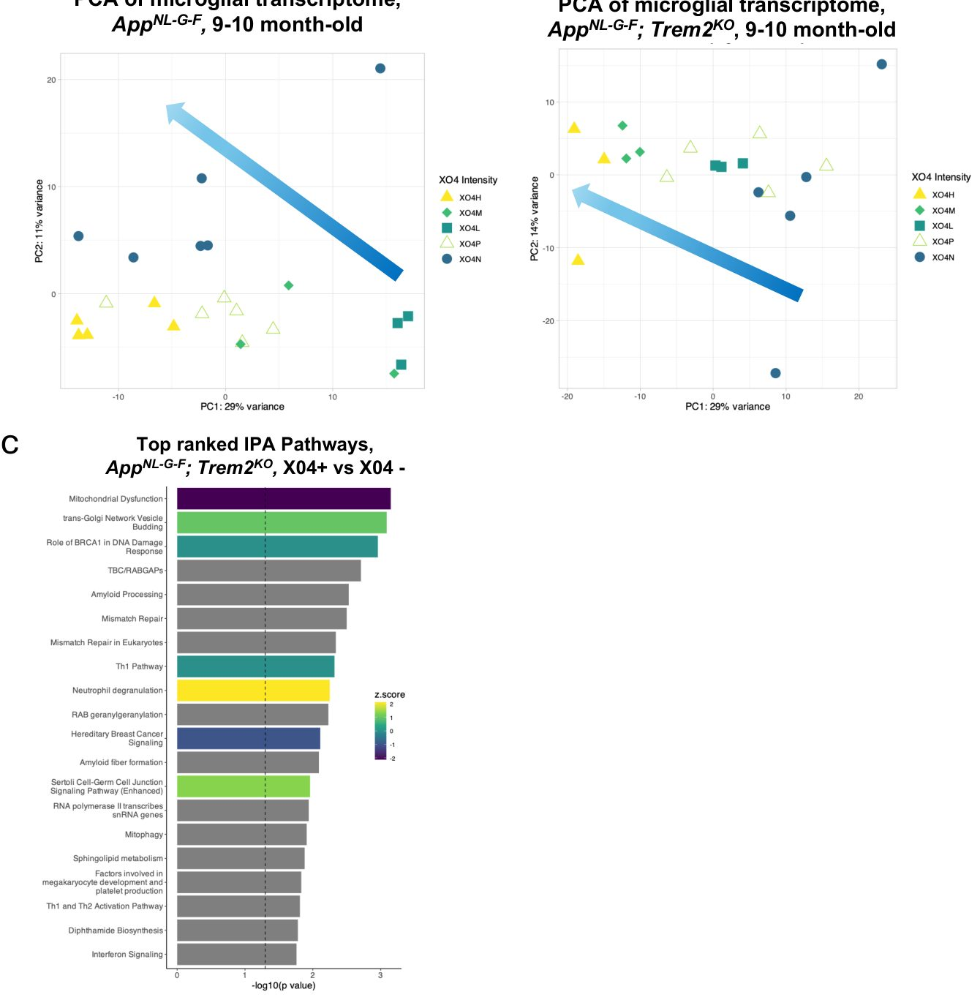</a><figcaption>Дополнительный рисунок 4. (A, B) Различные транскрипционные состояния микроглии, связанные с интенсивностью X04, которая отражает разную степень нагрузки Aβ у микроглии 9-месячных мышей AppNL-G-F и AppNL-G-F;Trem2KO. (A) Анализ главных компонент (PCA) объемного RNA-seq микроглии, выделенной из 9-месячных мышей AppNL-G-F (X04H, n = 5; X04M, n = 3; X04L, n = 3; X04P, n = 6; X04N, n = 6). (B) PCA объемного RNA-seq микроглии, выделенной из 9-месячных мышей AppNL-G-F;Trem2KO (X04H, n = 3; X04M, n = 3; X04L, n = 3; X04P, n = 5; X04N, n = 5). Стрелка (градиент от синего к светло-синему) обозначает спектр интенсивности X04 от низкого (справа) до высокого (слева). (C) Анализ канонических путей IPA, сравнивающий микроглию X04+ и X04- от 9-месячных мышей AppNL-G-F;Trem2KO. Столбчатая диаграмма отражает топ-20 значительно обогащенных канонических путей в микроглие X04+ (p-значение точного критерия Фишера &lt; 0.05). Обратите внимание, что анаболическая адаптация была полностью утрачена у микроглии с дефицитом TREM2. Пути ранжированы по значимости обогащения, представленной как −log10(P-value).</figcaption></figure>
<figure class="fig" data-n="S5" id="fig-S5"><a class="fig-img" href="../../media/2026-09-23/a-self-limiting-trem2-dependent-anabolic-program-confers-mic-fS5.jpg" data-zoom title="Открыть рисунок">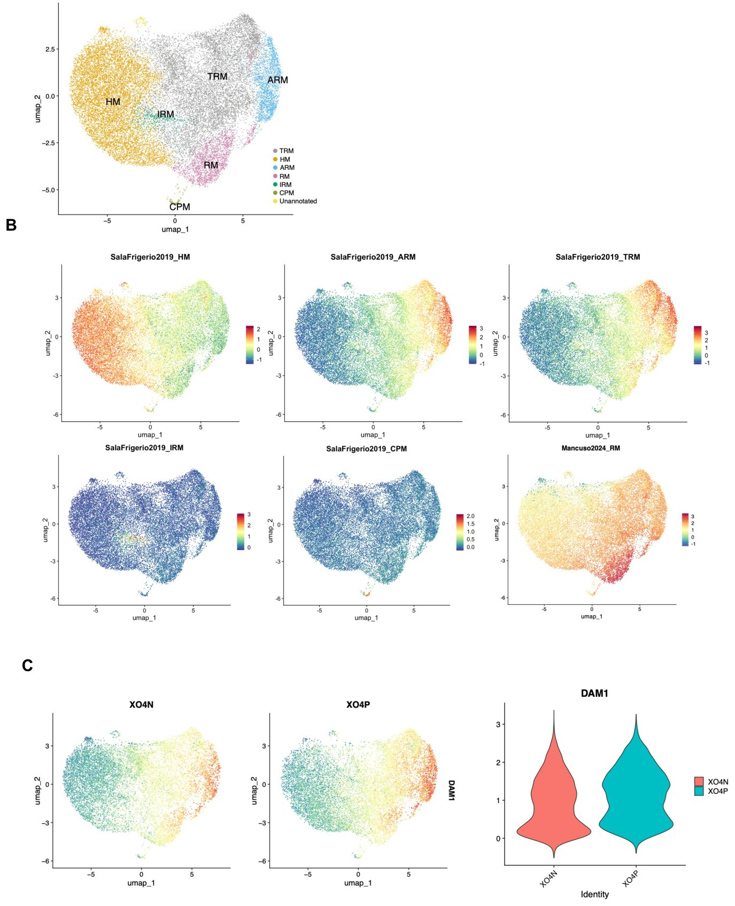</a><figcaption>Дополнительный рисунок 5. (A) Униформная аппроксимация и проекция многообразий (UMAP) данных scRNA-seq (разрешение 0.2) выявляет шесть различных кластеров микроглии: гомеостатическая микроглия (HM), микроглия с активированным ответом (ARM), микроглия переходного ответа (TRM), микроглия интерферонового ответа (IRM), цикличная/пролиферирующая микроглия (CPM) (Sala Frigerio et al., 2019) и рибосомальная микроглия (Mancuso et al., 2024), а также один небольшой неаннотированный кластер. (B) Валидация идентичности кластеров с использованием установленных оценок модулей. Графики признаков показывают проекцию генных сигнатур из работы Sala Frigerio et al. (2019), подтверждая согласованность текущей кластеризации с ранее определенными состояниями. Цветовые градиенты представляют рассчитанную оценку модуля для каждой клетки (синий: низкая; красный: высокая). (C) Распределение канонической сигнатуры микроглии, связанной с заболеваниями (DAM). Проекции UMAP (слева) и скрипичные диаграммы (справа) иллюстрируют экспрессию сигнатуры DAM (Chen &amp; Colonna, 2021) в условиях без фагоцитоза (X04-) и с фагоцитозом (X04+). Ось y представляет оценку модуля; ширина скрипки указывает на плотность клеток. (D) Контроль качества кластеризации по условиям X04. Проекции UMAP субкластеров высокого разрешения (разрешение 0.3), разделенные по условиям без фагоцитоза (X04-) и с фагоцитозом (X04+), показывают, что клетки X04+ и X04- занимают разные субкластеры. (E) Скрипичные диаграммы, отображающие оценки модуля DAM для каждого субкластера (разрешение 0.3) в условиях X04- и X04+. Обратите внимание, что оценки DAM сопоставимы между фагоцитарными и нефагоцитарными субкластерами. (F) IPA канонических путей с наивысшим рейтингом, сравнивающий фагоцитарный кластер 1 с нефагоцитарным кластером 6. Красные стрелки подчеркивают индукцию путей синтеза белка и трансляции; синяя стрелка обозначает подавление сигнализации нейровоспаления. (G) IPA канонических путей с наивысшим рейтингом, сравнивающий кластер 2 с преобладанием фагоцитоза с нефагоцитарным кластером 0. Красные стрелки подчеркивают усиление биогенеза рибосом и синтеза белка; желтые стрелки обозначают активацию митохондриального окислительного фосфорилирования. (H) Точечный график GSEA терминов биологических процессов (BP), специфически обогащенных в кластере 2 по сравнению с кластером 0. Цветовой градиент представляет скорректированные P-значения. Дополнительный рисунок 5 (продолжение)</figcaption></figure>
<figure class="fig" data-n="S5"><a class="fig-img" href="../../media/2026-09-23/a-self-limiting-trem2-dependent-anabolic-program-confers-mic-fS5-2.jpg" data-zoom title="Открыть рисунок">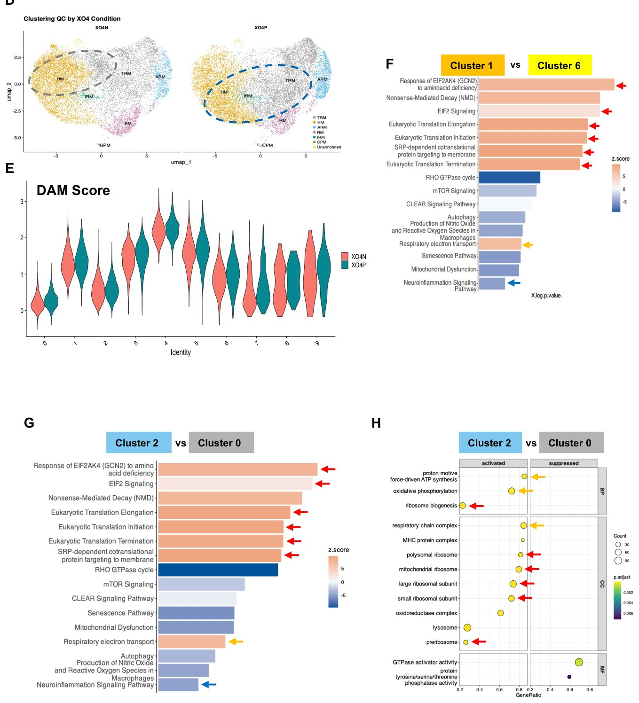</a><figcaption>Рис. S5 (продолжение 2)</figcaption></figure>
<figure class="fig" data-n="S6" id="fig-S6"><a class="fig-img" href="../../media/2026-09-23/a-self-limiting-trem2-dependent-anabolic-program-confers-mic-fS6.jpg" data-zoom title="Открыть рисунок">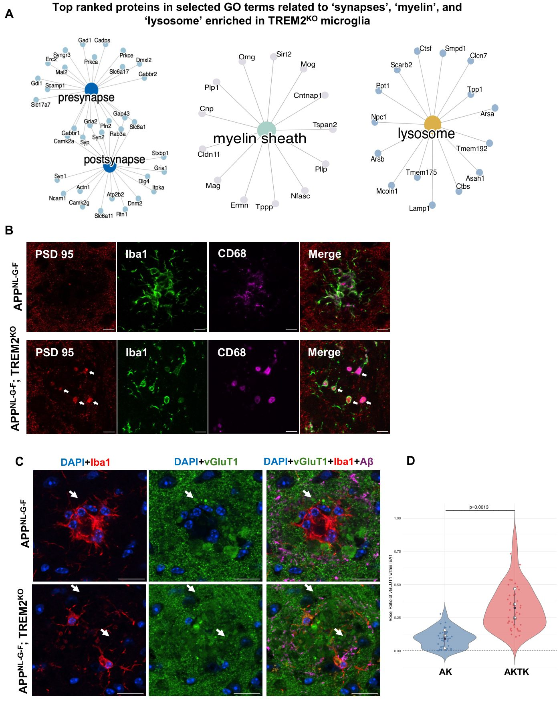</a><figcaption>Дополнительный рисунок 6. (A) Графики генно-концептуальной сети (cnet), отображающие белки с наибольшим дифференциальным изобилием, ассоциированные с терминами Gene Ontology (GO) «Синапс», «Миелиновая оболочка» и «Лизосома». Обратите внимание, что эти белки-грузы специфически обогащены в микроглие Trem2KO по сравнению с контролем AppNL-G-F в возрасте 9 месяцев, что указывает на нарушение деградации поглощенного материала. (B) Репрезентативные конфокальные изображения микроглии, ассоциированной с бляшками, у 9-месячных мышей, совместно окрашенные на PSD95 (постсинаптический маркер), CD68 (лизосомальный маркер) и Iba1. Белые стрелки подчеркивают пунктирные скопления PSD95, заключенные внутри фаголизосом CD68+, что указывает на успешное поглощение груза и его транспортировку в деградационные компартменты. Масштабная шкала: 50 мкм. (C) Репрезентативные конфокальные изображения микроглии, ассоциированной с бляшками, у 9-месячных мышей, совместно окрашенные на vGluT1 (пресинаптический маркер), Iba1 и Aβ. Белые стрелки подчеркивают выраженное внутриклеточное накопление пунктирных скоплений vGluT1 в соме микроглии Trem2KO. Масштабная шкала: 50 мкм. (D) Количественная оценка внутриклеточного накопления груза (vGluT1 и др.) в срезах мозга 9–10-месячных мышей AppNL-G-F и AppNL-G-F;Trem2KO. Цветные точки представляют отдельные ROI; сплошные черные круги и планки погрешностей представляют оценки маргинальных средних (EMM) ± 95% ДИ, полученные из бета-биномиальной обобщенной линейной смешанной модели (GLMM). (n = 5–6 мышей в группе). Парные сравнения выполнялись с использованием метода Дельта. Уровни значимости: *P &lt; 0.05, <strong>P &lt; 0.01, </strong>*P &lt; 0.001, ****P &lt; 0.0001. (E) Репрезентативные конфокальные изображения (MIP, 5 мкм) микроглии, ассоциированной с бляшками, совместно окрашенные на PSD95 (постсинаптический маркер), Iba1 и Aβ. Белые стрелки указывают на крупные (&gt;2 мкм) включения груза, связанные с отростками и заполненные пунктиром PSD95, исходящие из микроглии Trem2KO. Красная стрелка указывает клетку, использованную для построения 3D-поверхности на рисунке 6E. Масштабная шкала: 20 мкм. (F) Репрезентативные конфокальные изображения (MIP, 5 мкм), совместно окрашенные на основной белок миелина (MBP), Iba1 и Aβ. Белые стрелки указывают на включения груза, заполненные MBP, в микроглие Trem2KO. Красная стрелка указывает клетку, использованную для построения 3D-поверхности на рисунке 6H. Масштабная шкала: 20 мкм. (G-H) Дополнительные 3D-рендеры поверхности (Imaris) микроглии, ассоциированной с бляшками, у мышей AppNL-G-F;Trem2KO, подтверждающие морфологию включений груза в виде почкования, содержащих PSD95 (красный, G) или MBP (зеленый, H). Мембрана микроглии визуализирована маджентой (Iba1). Дополнительный рисунок 6 (продолжение)</figcaption></figure>
<figure class="fig" data-n="S6"><a class="fig-img" href="../../media/2026-09-23/a-self-limiting-trem2-dependent-anabolic-program-confers-mic-fS6-2.jpg" data-zoom title="Открыть рисунок">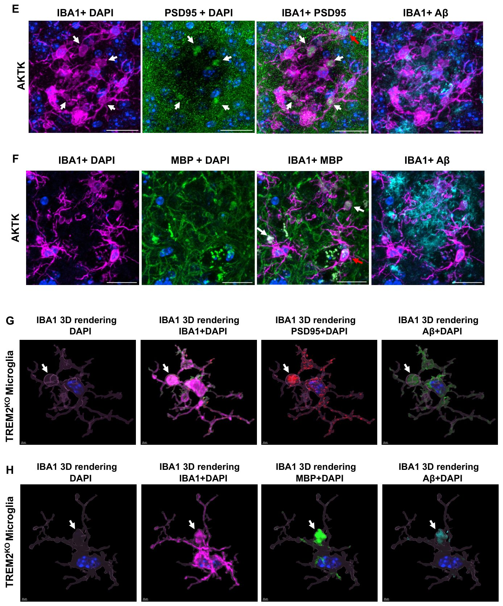</a><figcaption>Рис. S6 (продолжение 2)</figcaption></figure>
<figure class="fig" data-n="S7" id="fig-S7"><a class="fig-img" href="../../media/2026-09-23/a-self-limiting-trem2-dependent-anabolic-program-confers-mic-fS7.jpg" data-zoom title="Открыть рисунок">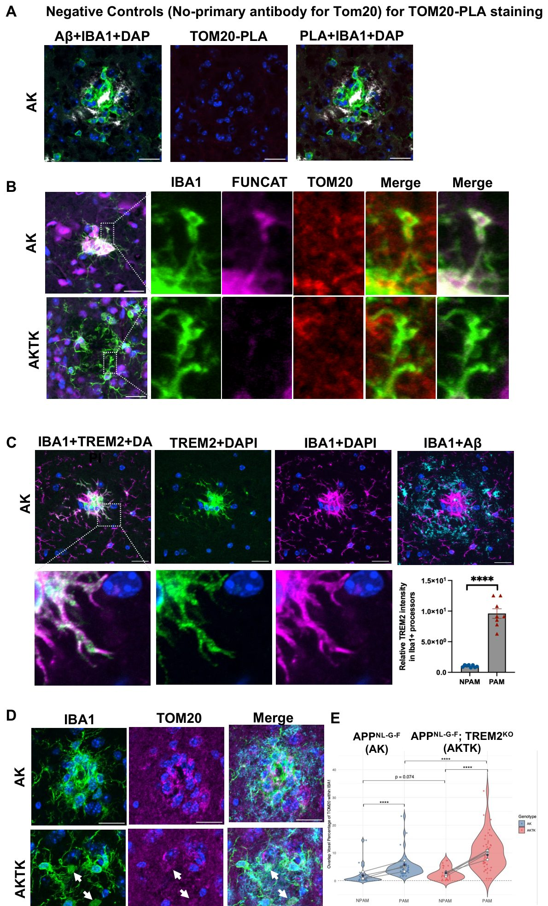</a><figcaption>Дополнительный рисунок 7. (A) Отрицательный контроль для анализа сближения проксимальных зон (PLA) с TOM20. Репрезентативные конфокальные изображения микроглии, ассоциированной с бляшками, обработанные параллельно с пропуском первичного антитела к TOM20; отсутствие PLA-сигнала подтверждает специфичность реакции TOM20-PLA. Масштабная шкала: 20 мкм. (B) Репрезентативные конфокальные изображения (z-стек MIP, 4 мкм) микроглии, ассоциированной с бляшками, у 9–10-месячных мышей AppNL-G-F и AppNL-G-F;Trem2KO, окрашенные совместно на TOM20 (митохондрии), Iba1 и FUNCAT (синтез новообразованных белков). Масштабная шкала: 20 мкм. (C) Репрезентативные конфокальные изображения (z-стек MIP, 4 мкм), совместно окрашенные на TREM2, Iba1 и Aβ у обоих генотипов. Белые рамки выделяют специфическую индукцию белка TREM2 в отростках микроглии AppNL-G-F, пространственно совпадающую с местами локального биогенеза митохондрий, показанными на рис. 7E. Масштабная шкала: 20 мкм. (D-E) Репрезентативные изображения и количественная оценка накопления митохондриальной массы относительно близости к бляшкам. Скрипичные диаграммы отображают распределение перекрывания вокселей TOM20 в пределах ROI Iba1+, классифицированных как не связанные с бляшками (NPAM) или связанные с бляшками (PAM). Цветные точки представляют отдельные ROI; сплошные круги и планки погрешностей представляют оценки маргинальных средних (EMM) ± 95% ДИ, полученные из бета-биномиальной обобщенной линейной смешанной модели (GLMM). Линии соединяют парные области в пределах биологических повторностей (n = 5–6 мышей). Парные сравнения выполнялись с использованием метода Дельта. <strong>*P &lt; 0.001, </strong>**P &lt; 0.0001.</figcaption></figure>
<figure class="fig" data-n="S8" id="fig-S8"><a class="fig-img" href="../../media/2026-09-23/a-self-limiting-trem2-dependent-anabolic-program-confers-mic-fS8.jpg" data-zoom title="Открыть рисунок">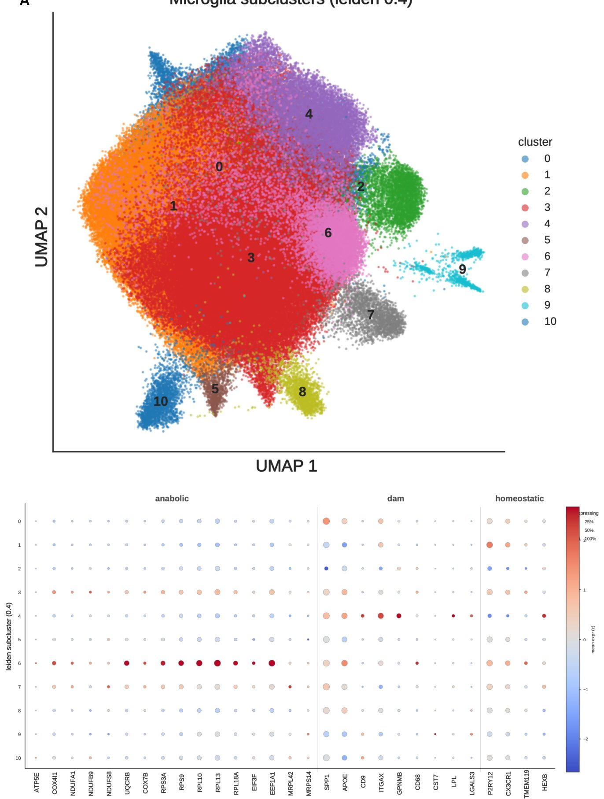</a><figcaption>Расширенный рисунок 8. (A) Неконтролируемая субкластеризация микроглии человека (разрешение Leiden 0.4) и точечный график генов модулей, определяющий рибосомальный/высокоанаболический субкластер, отличный от высокоэкспрессирующего маркеры DAM субкластера. (B) Оценка модуля стабильного референсного контроля по стадиям Брэака (n.s.), основанная на девяти широко используемых стабильных референсных генах из литературы по нормализации qPCR/RNA-seq: ACTB, TBP, POLR2A, PPIA, HPRT1, YWHAZ, PUM1, CASC3, ELF1. (C) Медиана генов, обнаруженных на ядро по стадиям Брэака (контроль глубины секвенирования; n.s.). (D) Анаболическое распределение на одну клетку по Брэаку. Снижение на уровне донора носит в основном композиционный характер (меньше клеток с высоким анаболизмом) с меньшим компонентом на одну клетку. (E) TREM2 против анаболического счета внутри микроглии с высоким DAM, по стадиям Брэака (Спирмен R). (F) Связь анаболической программы с TREM2 на уровне доноров. Верхний ряд: регрессия в пределах стадий Брэака с частичным коэффициентом Спирмена R (с поправкой на стадию Брэака). Нижний ряд: та же взаимосвязь, объединенная по всем донорам (одиночная регрессия, объединенный Спирмен R). (G) Связь анаболической программы с гомеостатическим модулем на уровне доноров (отрицательный контроль). Верхний ряд: регрессия в пределах стадий Брэака с частичным коэффициентом Спирмена R (с поправкой на стадию Брэака). Нижний ряд: та же взаимосвязь, объединенная по всем донорам (одиночная регрессия, объединенный Спирмен R).</figcaption></figure>
<figure class="fig" data-n="S8"><a class="fig-img" href="../../media/2026-09-23/a-self-limiting-trem2-dependent-anabolic-program-confers-mic-fS8-2.jpg" data-zoom title="Открыть рисунок">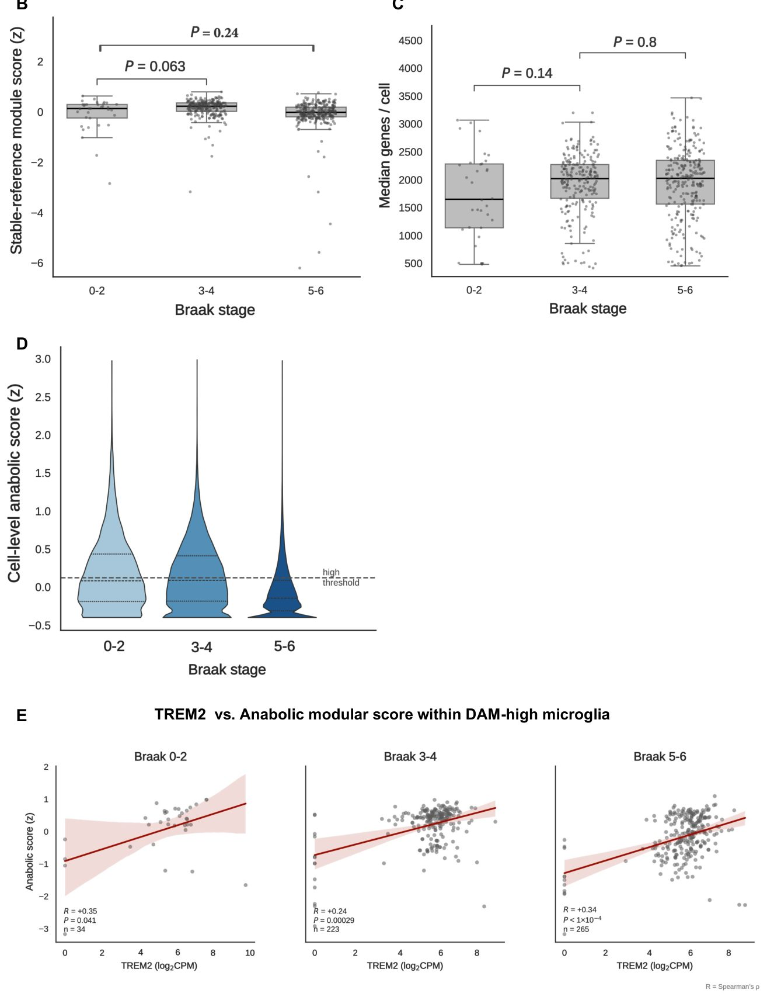</a><figcaption>Рис. S8 (продолжение 2)</figcaption></figure>
<figure class="fig" data-n="S8"><a class="fig-img" href="../../media/2026-09-23/a-self-limiting-trem2-dependent-anabolic-program-confers-mic-fS8-3.jpg" data-zoom title="Открыть рисунок">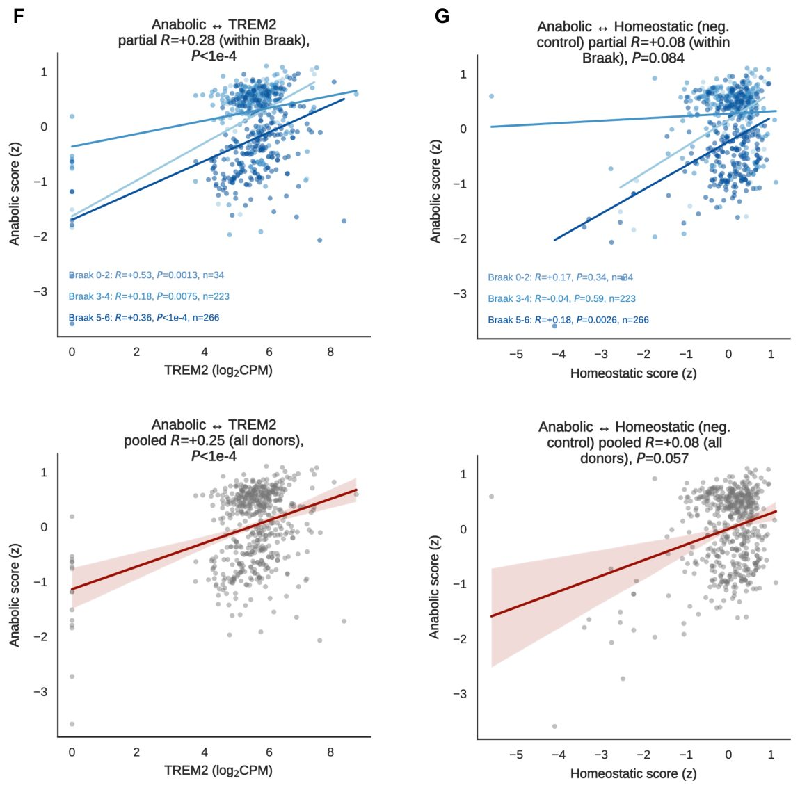</a><figcaption>Рис. S8 (продолжение 3)</figcaption></figure></div></details>
<h2 id="flow"><svg class="i" viewBox="0 0 24 24" fill="none" stroke-width="1.5" aria-hidden="true"><path d="M13 6L19 12L13 18" stroke="currentColor" stroke-linecap="round" stroke-linejoin="round"/><path d="M5 6L11 12L5 18" stroke="currentColor" stroke-linecap="round" stroke-linejoin="round"/></svg><span>Схема исследования</span></h2>
<div class="flow" data-block><div class="flow-step"><b>ВОПРОС</b><span>истощение иммунитета мозга</span></div><div class="flow-step"><b>МЕТОД</b><span>протеoмика и транскриптомика</span></div><div class="flow-step"><b>РЕЗУЛЬТАТ</b><span>выгорание анаболизма клеток</span></div><div class="flow-step"><b>ЗАЧЕМ</b><span>риск истощения терапии антителами</span></div></div>
<blockquote data-palette="warning"><p>Препринт не прошёл рецензирование. Выводы предварительные.</p></blockquote>
<h2 id="source"><svg class="i" viewBox="0 0 24 24" fill="none" stroke-width="1.5" aria-hidden="true"><path d="M13 6L19 12L13 18" stroke="currentColor" stroke-linecap="round" stroke-linejoin="round"/><path d="M5 6L11 12L5 18" stroke="currentColor" stroke-linecap="round" stroke-linejoin="round"/></svg><span>Источник</span></h2>
<div class="table" data-block><table><thead><tr><th>Категория</th><th>Лицензия препринта</th></tr></thead><tbody><tr><td>neuroscience</td><td>CC BY-NC-ND 4.0</td></tr></tbody></table></div>
<p class="authors">Авторы: Lin, D.; Atkinson, J. R.; Wu, W.; Chen, M.; Jayasekara, S.; Segal, B. M.; Ma, A.; Gao, J.</p>
<h3>Источники</h3>
<div class="table" data-block><table><thead><tr><th>Источник</th><th>Ссылка</th></tr></thead><tbody><tr><td>Страница препринта</td><td><a href="https://www.biorxiv.org/content/10.64898/2026.09.16.752098v1" target="_blank" rel="noopener">biorxiv.org</a></td></tr><tr><td>Полный текст (PDF)</td><td><a href="https://www.biorxiv.org/content/10.64898/2026.09.16.752098v1.full.pdf" target="_blank" rel="noopener">biorxiv.org</a></td></tr><tr><td>Копия PDF</td><td><a href="https://github.com/VivaLyaRaza/biorxiv-digest/releases/download/issue-2026-09-23/a-self-limiting-trem2-dependent-anabolic-program-confers-mic.pdf" target="_blank" rel="noopener">github.com</a></td></tr><tr><td>DOI</td><td><a href="https://doi.org/10.64898/2026.09.16.752098" target="_blank" rel="noopener">doi.org</a></td></tr><tr><td>Метаданные Crossref</td><td><a href="https://api.crossref.org/works/10.64898/2026.09.16.752098" target="_blank" rel="noopener">api.crossref.org</a></td></tr><tr><td>Europe PMC</td><td><a href="https://europepmc.org/search?query=DOI%3A%2210.64898/2026.09.16.752098%22" target="_blank" rel="noopener">europepmc.org</a></td></tr><tr><td>Иллюстрация</td><td><a href="https://commons.wikimedia.org/wiki/File:The_Abundance_of_Excitatory_Synaptic_Sites_in_Mature_Brain_Tissue_Is_Promoted_by_Treatment_with_Myo-Inositol.jpg" target="_blank" rel="noopener">commons.wikimedia.org</a></td></tr></tbody></table></div>
<h2 id="share"><svg class="i" viewBox="0 0 24 24" fill="none" stroke-width="1.5" aria-hidden="true"><path d="M13 6L19 12L13 18" stroke="currentColor" stroke-linecap="round" stroke-linejoin="round"/><path d="M5 6L11 12L5 18" stroke="currentColor" stroke-linecap="round" stroke-linejoin="round"/></svg><span>Поделиться</span></h2>
<div class="qr" data-block><figure><div class="fig-img"></div><figcaption>Эта статья</figcaption></figure><figure><div class="fig-img"></div><figcaption>Оригинал (DOI)</figcaption></figure></div><nav class="pager" data-block><a class="btn btn-md btn-hex prev" href="../2026-09-23/neonatal-aav-sil1-gene-therapy-prevents-marinesco-sjo-gren-s.html" title="Генная терапия остановила развитие редкого синдрома у мышей"><span class="btn-frame" aria-hidden="true"></span><span class="btn-content"><svg class="i" viewBox="0 0 24 24" fill="none" stroke-width="1.5" aria-hidden="true"><path d="M21 12L3 12M3 12L11.5 3.5M3 12L11.5 20.5" stroke="currentColor" stroke-linecap="round" stroke-linejoin="round"/></svg><span>Генная терапия остановила развитие редкого синдрома у мышей</span></span></a><a class="btn btn-md btn-hex next" href="../2026-09-23/loss-of-tdp-43-function-drives-cryptic-circular-rnas-in-neur.html" title="Сбой ключевого белка при деменции запускает аномальные кольцевые РНК"><span class="btn-frame" aria-hidden="true"></span><span class="btn-content"><span>Сбой ключевого белка при деменции запускает аномальные кольцевые РНК</span><svg class="i" viewBox="0 0 24 24" fill="none" stroke-width="1.5" aria-hidden="true"><path d="M3 12L21 12M21 12L12.5 3.5M21 12L12.5 20.5" stroke="currentColor" stroke-linecap="round" stroke-linejoin="round"/></svg></span></a></nav>
<footer class="foot" data-block><span>БиоСигнал · 2026</span><a href="https://t.me/oba_boba" target="_blank" rel="noopener">Telegram</a><a href="../../../yfm/ru/index.html">YFM</a><a href="../../../nextra/ru">Nextra</a><span>Интерфейс по мотивам ARWES (MIT) · звуки ARWES (MIT)</span></footer>
</div></div></div>
</main>
</div>
</div>
<div class="modal" id="nav-modal" role="dialog" aria-modal="true" aria-labelledby="nav-title"><canvas class="modal-dots" aria-hidden="true"></canvas><div class="modal-box"><div class="modal-frames" aria-hidden="true"><svg class="f1"></svg><svg class="f2"></svg></div><div class="modal-content"><header class="modal-head"><h1 id="nav-title">Навигация</h1><button type="button" class="modal-close" data-close title="Закрыть"><svg class="i" viewBox="0 0 24 24" fill="none" stroke-width="1.5" aria-hidden="true"><path d="M6.75827 17.2426L12.0009 12M17.2435 6.75736L12.0009 12M12.0009 12L6.75827 6.75736M12.0009 12L17.2435 17.2426" stroke="currentColor" stroke-linecap="round" stroke-linejoin="round"/></svg></button></header><hr><div class="modal-body"><ul class="nav-links"><li class=""><a href="../../ru/index.html"><svg class="i" viewBox="0 0 24 24" fill="none" stroke-width="1.5" aria-hidden="true"><path d="M17.5 8C17.5 8 19 9.5 19 12C19 14.5 17.5 16 17.5 16" stroke="currentColor" stroke-linecap="round" stroke-linejoin="round"/><path d="M20.5 5C20.5 5 23 7.5 23 12C23 16.5 20.5 19 20.5 19" stroke="currentColor" stroke-linecap="round" stroke-linejoin="round"/><path d="M6.5 8C6.5 8 5 9.5 5 12C5 14.5 6.5 16 6.5 16" stroke="currentColor" stroke-linecap="round" stroke-linejoin="round"/><path d="M3.5 5C3.5 5 1 7.5 1 12C1 16.5 3.5 19 3.5 19" stroke="currentColor" stroke-linecap="round" stroke-linejoin="round"/><path d="M12 13C12.5523 13 13 12.5523 13 12C13 11.4477 12.5523 11 12 11C11.4477 11 11 11.4477 11 12C11 12.5523 11.4477 13 12 13Z" fill="currentColor" stroke="currentColor" stroke-linecap="round" stroke-linejoin="round"/></svg><span>Главная</span></a></li><li class="active"><a href="../../ru/2026-09-24/index.html"><svg class="i" viewBox="0 0 24 24" fill="none" stroke-width="1.5" aria-hidden="true"><path d="M4 21.4V2.6C4 2.26863 4.26863 2 4.6 2H16.2515C16.4106 2 16.5632 2.06321 16.6757 2.17574L19.8243 5.32426C19.9368 5.43679 20 5.5894 20 5.74853V21.4C20 21.7314 19.7314 22 19.4 22H4.6C4.26863 22 4 21.7314 4 21.4Z" stroke="currentColor" stroke-linecap="round" stroke-linejoin="round"/><path d="M8 10L16 10" stroke="currentColor" stroke-linecap="round" stroke-linejoin="round"/><path d="M8 18L16 18" stroke="currentColor" stroke-linecap="round" stroke-linejoin="round"/><path d="M8 14L12 14" stroke="currentColor" stroke-linecap="round" stroke-linejoin="round"/><path d="M16 2V5.4C16 5.73137 16.2686 6 16.6 6H20" stroke="currentColor" stroke-linecap="round" stroke-linejoin="round"/></svg><span>Свежий выпуск</span></a></li><li class=""><a href="../../ru/topics/index.html"><svg class="i" viewBox="0 0 24 24" fill="none" stroke-width="1.5" aria-hidden="true"><path d="M14 20.4V14.6C14 14.2686 14.2686 14 14.6 14H20.4C20.7314 14 21 14.2686 21 14.6V20.4C21 20.7314 20.7314 21 20.4 21H14.6C14.2686 21 14 20.7314 14 20.4Z" stroke="currentColor" stroke-width="1.5"/><path d="M3 20.4V14.6C3 14.2686 3.26863 14 3.6 14H9.4C9.73137 14 10 14.2686 10 14.6V20.4C10 20.7314 9.73137 21 9.4 21H3.6C3.26863 21 3 20.7314 3 20.4Z" stroke="currentColor" stroke-width="1.5"/><path d="M14 9.4V3.6C14 3.26863 14.2686 3 14.6 3H20.4C20.7314 3 21 3.26863 21 3.6V9.4C21 9.73137 20.7314 10 20.4 10H14.6C14.2686 10 14 9.73137 14 9.4Z" stroke="currentColor" stroke-width="1.5"/><path d="M3 9.4V3.6C3 3.26863 3.26863 3 3.6 3H9.4C9.73137 3 10 3.26863 10 3.6V9.4C10 9.73137 9.73137 10 9.4 10H3.6C3.26863 10 3 9.73137 3 9.4Z" stroke="currentColor" stroke-width="1.5"/></svg><span>Темы</span></a></li><li class=""><a href="../../ru/schedule.html"><svg class="i" viewBox="0 0 24 24" fill="none" stroke-width="1.5" aria-hidden="true"><path d="M7 6L17 6" stroke="currentColor" stroke-linecap="round" stroke-linejoin="round"/><path d="M7 9L17 9" stroke="currentColor" stroke-linecap="round" stroke-linejoin="round"/><path d="M9 17H15" stroke="currentColor" stroke-linecap="round" stroke-linejoin="round"/><path d="M3 12H2.6C2.26863 12 2 12.2686 2 12.6V21.4C2 21.7314 2.26863 22 2.6 22H21.4C21.7314 22 22 21.7314 22 21.4V12.6C22 12.2686 21.7314 12 21.4 12H21M3 12V2.6C3 2.26863 3.26863 2 3.6 2H20.4C20.7314 2 21 2.26863 21 2.6V12M3 12H21" stroke="currentColor" stroke-width="1.5"/></svg><span>Архив</span></a></li><li class=""><a href="../../ru/sources.html"><svg class="i" viewBox="0 0 24 24" fill="none" stroke-width="1.5" aria-hidden="true"><path d="M6 6L18 6" stroke="currentColor" stroke-linecap="round" stroke-linejoin="round"/><path d="M6 10H18" stroke="currentColor" stroke-linecap="round" stroke-linejoin="round"/><path d="M13 14L18 14" stroke="currentColor" stroke-linecap="round" stroke-linejoin="round"/><path d="M13 18L18 18" stroke="currentColor" stroke-linecap="round" stroke-linejoin="round"/><path d="M2 21.4V2.6C2 2.26863 2.26863 2 2.6 2H21.4C21.7314 2 22 2.26863 22 2.6V21.4C22 21.7314 21.7314 22 21.4 22H2.6C2.26863 22 2 21.7314 2 21.4Z" stroke="currentColor" stroke-linecap="round" stroke-linejoin="round"/><path d="M6 18V14H9V18H6Z" stroke="currentColor" stroke-linecap="round" stroke-linejoin="round"/></svg><span>О проекте</span></a></li></ul><div class="nav-langs"><a class="on" href="../../ru/2026-09-23/a-self-limiting-trem2-dependent-anabolic-program-confers-mic.html" hreflang="ru" data-hard>RU<small>Русский</small></a><a class="" href="../../uz/2026-09-23/a-self-limiting-trem2-dependent-anabolic-program-confers-mic.html" hreflang="uz" data-hard>UZ<small>O&#x27;zbekcha</small></a><a class="" href="../../kz/2026-09-23/a-self-limiting-trem2-dependent-anabolic-program-confers-mic.html" hreflang="kk" data-hard>KZ<small>Қазақша</small></a></div><div class="nav-toggles"><button type="button" data-toggle="motion"><svg class="i on" viewBox="0 0 24 24" fill="none" stroke-width="1.5" aria-hidden="true"><path d="M13.8476 13.317L9.50515 18.2798C8.70833 19.1905 7.29167 19.1905 6.49485 18.2798L2.15238 13.317C1.49259 12.563 1.49259 11.437 2.15238 10.683L6.49485 5.72018C7.29167 4.80952 8.70833 4.80952 9.50515 5.72017L13.8476 10.683C14.5074 11.437 14.5074 12.563 13.8476 13.317Z" stroke="currentColor" stroke-linecap="round" stroke-linejoin="round"/><path d="M13 19L17.8844 13.3016C18.5263 12.5526 18.5263 11.4474 17.8844 10.6984L13 5" stroke="currentColor" stroke-linecap="round" stroke-linejoin="round"/><path d="M17 19L21.8844 13.3016C22.5263 12.5526 22.5263 11.4474 21.8844 10.6984L17 5" stroke="currentColor" stroke-linecap="round" stroke-linejoin="round"/></svg><svg class="i off" viewBox="0 0 24 24" fill="none" stroke-width="1.5" aria-hidden="true"><path d="M2 12H5H8" stroke="currentColor" stroke-linecap="round" stroke-linejoin="round"/><path d="M6.25 6L6.49485 5.72018C7.29167 4.80952 8.70833 4.80952 9.50515 5.72017L13.8476 10.683C14.5074 11.437 14.5074 12.563 13.8476 13.317L9.50515 18.2798C8.70833 19.1905 7.29167 19.1905 6.49485 18.2798L6.25 18" stroke="currentColor" stroke-linecap="round" stroke-linejoin="round"/><path d="M13 19L17.8844 13.3016C18.5263 12.5526 18.5263 11.4474 17.8844 10.6984L13 5" stroke="currentColor" stroke-linecap="round" stroke-linejoin="round"/><path d="M17 19L21.8844 13.3016C22.5263 12.5526 22.5263 11.4474 21.8844 10.6984L17 5" stroke="currentColor" stroke-linecap="round" stroke-linejoin="round"/></svg><span>Анимация</span></button><button type="button" data-toggle="audio"><svg class="i on" viewBox="0 0 24 24" fill="none" stroke-width="1.5" aria-hidden="true"><path d="M1 13.8571V10.1429C1 9.03829 1.89543 8.14286 3 8.14286H5.9C6.09569 8.14286 6.28708 8.08544 6.45046 7.97772L12.4495 4.02228C13.1144 3.5839 14 4.06075 14 4.85714V19.1429C14 19.9392 13.1144 20.4161 12.4495 19.9777L6.45046 16.0223C6.28708 15.9146 6.09569 15.8571 5.9 15.8571H3C1.89543 15.8571 1 14.9617 1 13.8571Z" stroke="currentColor"/><path d="M17.5 7.5C17.5 7.5 19 9 19 11.5C19 14 17.5 15.5 17.5 15.5" stroke="currentColor" stroke-linecap="round" stroke-linejoin="round"/><path d="M20.5 4.5C20.5 4.5 23 7 23 11.5C23 16 20.5 18.5 20.5 18.5" stroke="currentColor" stroke-linecap="round" stroke-linejoin="round"/></svg><svg class="i off" viewBox="0 0 24 24" fill="none" stroke-width="1.5" aria-hidden="true"><path d="M18 14L20.0005 12M22 10L20.0005 12M20.0005 12L18 10M20.0005 12L22 14" stroke="currentColor" stroke-linecap="round" stroke-linejoin="round"/><path d="M2 13.8571V10.1429C2 9.03829 2.89543 8.14286 4 8.14286H6.9C7.09569 8.14286 7.28708 8.08544 7.45046 7.97772L13.4495 4.02228C14.1144 3.5839 15 4.06075 15 4.85714V19.1429C15 19.9392 14.1144 20.4161 13.4495 19.9777L7.45046 16.0223C7.28708 15.9146 7.09569 15.8571 6.9 15.8571H4C2.89543 15.8571 2 14.9617 2 13.8571Z" stroke="currentColor"/></svg><span>Звук</span></button></div><div class="social"><a href="https://t.me/oba_boba" target="_blank" rel="noopener"><svg class="i" viewBox="0 0 24 24" fill="none" stroke-width="1.5" aria-hidden="true"><path d="M21 5L2 12.5L9 13.5M21 5L18.5 20L9 13.5M21 5L9 13.5M9 13.5V19L12.2488 15.7229" stroke="currentColor" stroke-linecap="round" stroke-linejoin="round"/></svg><span class="hide-sm-down">Telegram</span></a><a href="../../../app/biosignal.apk"><svg class="i" viewBox="0 0 24 24" fill="none" stroke-width="1.5" aria-hidden="true"><path d="M6 20L18 20" stroke="currentColor" stroke-linecap="round" stroke-linejoin="round"/><path d="M12 4V16M12 16L15.5 12.5M12 16L8.5 12.5" stroke="currentColor" stroke-linecap="round" stroke-linejoin="round"/></svg><span class="hide-sm-down">Android</span></a><a href="../../../yfm/ru/feed.xml" target="_blank" rel="noopener"><svg class="i" viewBox="0 0 24 24" fill="none" stroke-width="1.5" aria-hidden="true"><path d="M12 19C12 14.8 9.2 12 5 12" stroke="currentColor" stroke-linecap="round" stroke-linejoin="round"/><path d="M19 19C19 10.6 13.4 5 5 5" stroke="currentColor" stroke-linecap="round" stroke-linejoin="round"/><path d="M5 19.01L5.01 18.9989" stroke="currentColor" stroke-linecap="round" stroke-linejoin="round"/></svg><span class="hide-sm-down">RSS</span></a><a href="../../../api/papers.json" target="_blank" rel="noopener"><svg class="i" viewBox="0 0 24 24" fill="none" stroke-width="1.5" aria-hidden="true"><path d="M13.5 6L10 18.5" stroke="currentColor" stroke-linecap="round" stroke-linejoin="round"/><path d="M6.5 8.5L3 12L6.5 15.5" stroke="currentColor" stroke-linecap="round" stroke-linejoin="round"/><path d="M17.5 8.5L21 12L17.5 15.5" stroke="currentColor" stroke-linecap="round" stroke-linejoin="round"/></svg><span class="hide-sm-down">API</span></a></div><div class="modal-foot"><a href="../../ru/sources.html">БиоСигнал v2026.09.25</a></div></div></div></div></div>
<div class="modal lightbox" id="lightbox" role="dialog" aria-modal="true" aria-labelledby="lb-title"><div class="modal-box"><div class="modal-frames" aria-hidden="true"><svg class="f1"></svg><svg class="f2"></svg></div><div class="modal-content"><header class="modal-head"><h1 id="lb-title">Рисунок</h1><button type="button" class="modal-close" data-close title="Закрыть"><svg class="i" viewBox="0 0 24 24" fill="none" stroke-width="1.5" aria-hidden="true"><path d="M6.75827 17.2426L12.0009 12M17.2435 6.75736L12.0009 12M12.0009 12L6.75827 6.75736M12.0009 12L17.2435 17.2426" stroke="currentColor" stroke-linecap="round" stroke-linejoin="round"/></svg></button></header><hr><div class="modal-body"><div class="zoom-wrap"><div class="scanline"></div></div><figcaption></figcaption></div></div></div></div>
<script src="../../assets/arwes.js?v=202609251216" defer></script>
</body>
</html>